<!doctype html>
<html lang="en">
<head>
  <meta charset="utf-8">
  <meta name="viewport" content="width=device-width, initial-scale=1">
  <title>arxiv digest — 2026-09-09</title>
  <style>
:root {
  --bg: #ffffff;
  --fg: #1f2328;
  --muted: #59636e;
  --border: #d0d7de;
  --card: #f6f8fa;
  --link: #0969da;
}
body {
  max-width: 980px;
  margin: 0 auto;
  padding: 2rem 1rem 5rem;
  font-family: -apple-system, BlinkMacSystemFont, "Segoe UI", Helvetica, Arial, sans-serif;
  line-height: 1.55;
  color: var(--fg);
  background: var(--bg);
}
a { color: var(--link); }
img { max-width: 100%; height: auto; }
pre, code { background: var(--card); border-radius: 6px; }
pre { padding: 1rem; overflow-x: auto; }
blockquote { border-left: 4px solid var(--border); padding-left: 1rem; color: var(--muted); }
details { margin: 0.6rem 0; }
summary { cursor: pointer; font-weight: 600; }
.paper-figures-scroll {
  display: flex;
  gap: 1rem;
  overflow-x: auto;
  overscroll-behavior-x: contain;
  padding: 0.75rem 0.25rem 1rem;
  margin: 1rem 0 1.25rem;
  border-top: 1px solid var(--border);
  border-bottom: 1px solid var(--border);
  scroll-snap-type: x proximity;
}
.paper-figure-card {
  flex: 0 0 min(260px, 72vw);
  scroll-snap-align: start;
  background: var(--card);
  border: 1px solid var(--border);
  border-radius: 12px;
  padding: 0.55rem;
}
.paper-figure-card img {
  display: block;
  width: 100%;
  max-height: 240px;
  object-fit: contain;
  background: white;
  border-radius: 8px;
}
.paper-figure-caption {
  display: block;
  margin-top: 0.5rem;
  color: var(--muted);
  font-size: 0.85rem;
}
.figure-strip-hint {
  color: var(--muted);
  font-size: 0.9rem;
  margin-bottom: -0.3rem;
}
</style>
  <!-- MathJax: renders $...$ inline math and $$...$$ display math, plus
       \(...\) and \[...\]. Loaded from the official CDN; works offline
       once cached. Configured to skip code/pre blocks so arxiv IDs that
       look like dollar amounts don't get mangled. -->
  <script>
    window.MathJax = {
      tex: {
        inlineMath: [['$', '$'], ['\\(', '\\)']],
        displayMath: [['$$', '$$'], ['\\[', '\\]']],
        processEscapes: true,
        processEnvironments: true
      },
      options: {
        skipHtmlTags: ['script', 'noscript', 'style', 'textarea', 'pre', 'code'],
        ignoreHtmlClass: 'tex2jax_ignore',
        processHtmlClass: 'tex2jax_process'
      }
    };
  </script>
  <script id="MathJax-script" async
    src="https://cdn.jsdelivr.net/npm/mathjax@3/es5/tex-chtml.js"></script>
</head>
<body>
<header style="background-color: #333; color: white; padding: 15px; margin-bottom: 20px;">
  <h1 style="margin: 0; font-size: 24px;">
    <a href="https://ochelpan.github.io/arXiv_clean/" style="color: white; text-decoration: none;">Main</a>
  </h1>
</header>

<h1>Daily arXiv Report</h1>

<hr>
<p>
<a href="index.html">← Index</a>
 · <a href="papers_03.html">← Previous</a> · <a href="papers_05.html">Next →</a>
</p>
<hr>

<h2>Papers 61–80</h2>
<p><a id="paper-2609.09068"></a></p>
<h3 id="renormalization-of-one-dimensional-semirelativistic-bosons-with-contact-interactions"><a href="http://arxiv.org/abs/2609.09068v1">Renormalization of One-Dimensional Semirelativistic Bosons with Contact Interactions</a></h3>
<p><strong>Authors:</strong> Fatih Erman, O. Teoman Turgut<br>
<strong>Type:</strong> theory · <strong>Category:</strong> quantum gases · <strong>PDF:</strong> <a href="https://arxiv.org/pdf/2609.09068v1">https://arxiv.org/pdf/2609.09068v1</a><br>
<strong>Analysis basis:</strong> full PDF text, analyzed in chunks
<strong>Topic relevance:</strong> <code>Keldysh / 2PI / non-Gaussian methods</code> <strong>2/5</strong></p>
<div class="figure-strip-hint">↔ Scroll figures horizontally</div>
<div class="paper-figures-scroll">
<figure class="paper-figure-card">
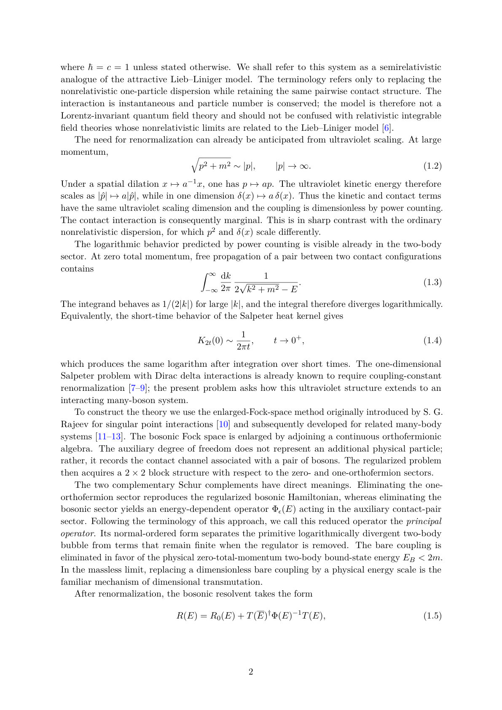
<figcaption class="paper-figure-caption"><b>Fig 1.</b> Low-resolution page preview, page 2</figcaption>
</figure>
<figure class="paper-figure-card">
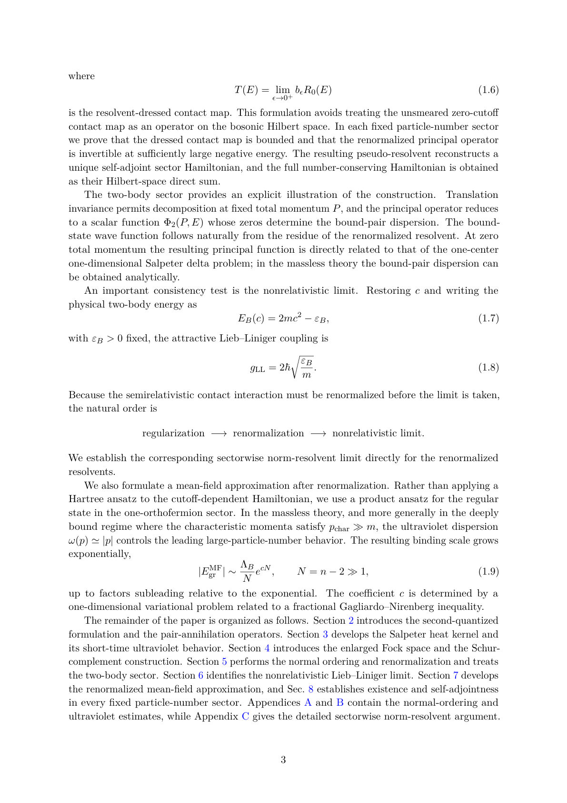
<figcaption class="paper-figure-caption"><b>Fig 2.</b> Low-resolution page preview, page 3</figcaption>
</figure>
<figure class="paper-figure-card">
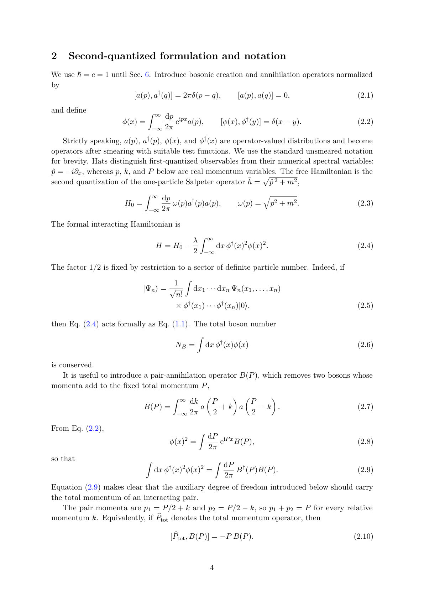
<figcaption class="paper-figure-caption"><b>Fig 3.</b> Low-resolution page preview, page 4</figcaption>
</figure>
<figure class="paper-figure-card">
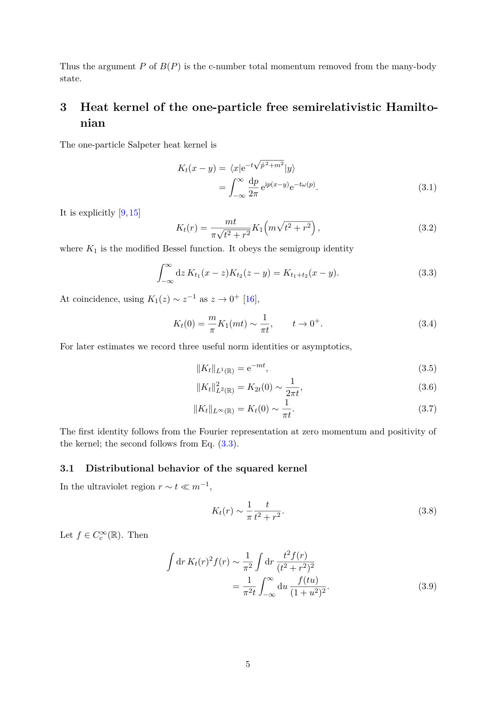
<figcaption class="paper-figure-caption"><b>Fig 4.</b> Low-resolution page preview, page 5</figcaption>
</figure>
<figure class="paper-figure-card">
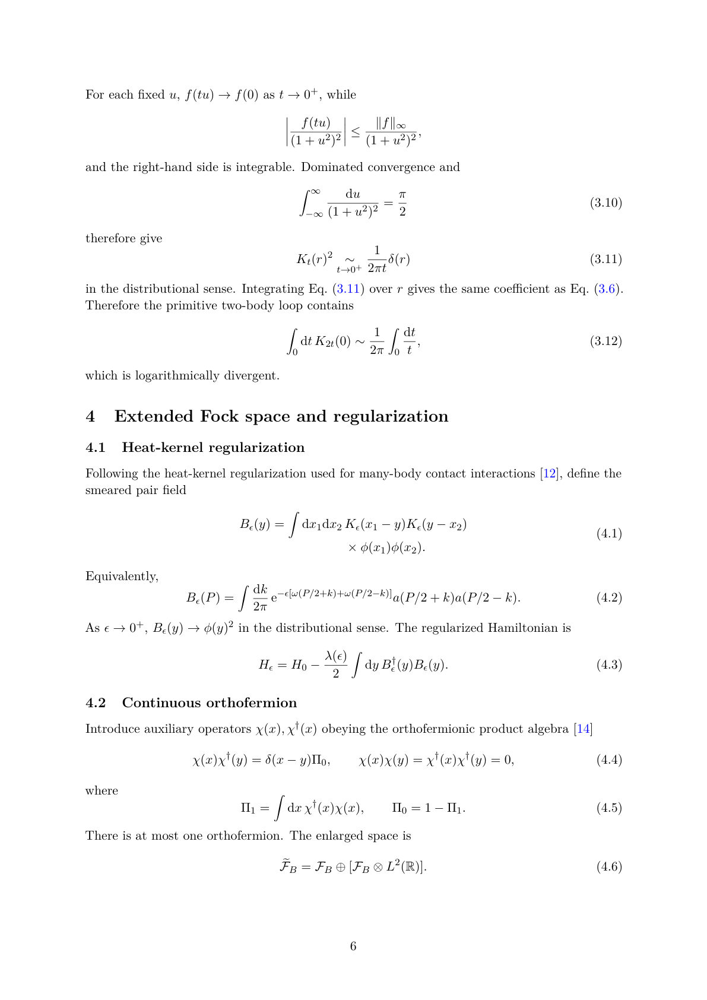
<figcaption class="paper-figure-caption"><b>Fig 5.</b> Low-resolution page preview, page 6</figcaption>
</figure>
</div>

<p><strong>Summary.</strong> This theoretical paper develops a renormalization scheme for one-dimensional bosons with semirelativistic dispersion and contact interactions. By systematically handling logarithmic divergences using advanced resolvent techniques, the authors prove that the full interacting Hamiltonian converges to the established Lieb-Liniger model in the nonrelativistic limit. This provides a powerful, rigorous framework for studying strongly interacting quantum gases.</p>
<p><strong>Why it may be interesting.</strong> This work provides a rigorous, field-theoretic approach to handling strong, short-range interactions in low-dimensional quantum systems, connecting a relativistic-like dispersion to a standard nonrelativistic model (Lieb-Liniger).</p>
<details>
<summary>Detailed structure</summary>
<p><strong>Main problem.</strong> The paper addresses the renormalization of a quantum many-body system consisting of one-dimensional spinless bosons interacting via attractive contact potentials, which leads to ultraviolet divergences.</p>
<p><strong>Main result.</strong> The theory successfully constructs a cutoff-independent, self-adjoint Hamiltonian whose nonrelativistic limit precisely reproduces the well-known attractive Lieb-Liniger Hamiltonian.</p>
<p><strong>Method.</strong> The methodology involves advanced renormalization group techniques using an enlarged Fock space and the Schur-complement representation of the resolvent to systematically absorb divergences.</p>
<p><strong>Model / system.</strong> The system models spinless bosons in one dimension with a semirelativistic dispersion relation ($\hat{p}^2 + m^2$) and attractive contact interactions ($\delta(x)$). The Hamiltonian is studied in the context of quantum field theory renormalization.</p>
<p><strong>Key observables.</strong> The zero-total-momentum two-body bound-state energy ($E_B$), the renormalized resolvent $R(E)$, and the mean-field binding scale $|E_{MF}|$.</p>
<p><strong>Important parameters / regimes.</strong> The bare coupling constant ($\lambda$), the particle number ($N$), and the momentum cutoff ($\Lambda$ or $c$).</p>
<p><strong>Assumptions / limitations.</strong> The procedure assumes the existence of a unique self-adjoint Hamiltonian defined by the resolvent, and convergence is established by comparing the semirelativistic result to the known Lieb-Liniger model.</p>
<p><strong>Figures summary.</strong> The notes reference mathematical equations (e.g., Eq. 1.1, Eq. 5.15, Eq. C.102) detailing the formal structure of the Hamiltonians, resolvents, and convergence proofs, rather than describing visual figures.</p>
<p><strong>Paper structure.</strong> The paper progresses from defining the divergent Hamiltonian and the renormalization procedure (using the resolvent) to explicitly calculating the two-body sector, and finally demonstrating the convergence of the full $N$-body theory to the nonrelativistic Lieb-Liniger model.</p>
</details>
<details>
<summary>Abstract</summary>
<p>We study one-dimensional spinless bosons with semirelativistic spinless-Salpeter dispersion and attractive pairwise contact interactions. Because the dispersion becomes linear at large momentum, the contact interaction is marginal by power counting and produces a logarithmic ultraviolet divergence. We construct the renormalized many-body theory using an enlarged Fock space and a Schur-complement representation of the resolvent, eliminating the bare coupling in favor of the physical zero-total-momentum two-body bound-state energy. The resulting cutoff-independent resolvent defines a self-adjoint Hamiltonian in each fixed particle-number sector. We treat the two-body problem explicitly and show, in the norm-resolvent sense, that the nonrelativistic limit reproduces the attractive Lieb--Liniger Hamiltonian. We also formulate a mean-field approximation directly within the renormalized theory. In the massless and deeply bound large-particle-number regimes, it predicts an exponentially increasing binding scale whose exponent is determined by a one-dimensional variational problem.</p>
</details>
<p><sub><a href="#top">↑ back to top</a></sub></p>

<p><a id="paper-2609.07860"></a></p>
<h3 id="snakes-on-a-hyper-plane-dynamical-and-ontological-locality-in-everettian-quantum-mechanics"><a href="http://arxiv.org/abs/2609.07860v1">Snakes on a Hyper-Plane: Dynamical and Ontological Locality in Everettian Quantum Mechanics</a></h3>
<p><strong>Authors:</strong> Travis Norsen<br>
<strong>Type:</strong> theory · <strong>Category:</strong> other · <strong>PDF:</strong> <a href="https://arxiv.org/pdf/2609.07860v1">https://arxiv.org/pdf/2609.07860v1</a><br>
<strong>Analysis basis:</strong> full PDF text, analyzed in chunks
<strong>Topic relevance:</strong> <code>quantum measurements</code> <strong>2/5</strong></p>
<div class="figure-strip-hint">↔ Scroll figures horizontally</div>
<div class="paper-figures-scroll">
<figure class="paper-figure-card">
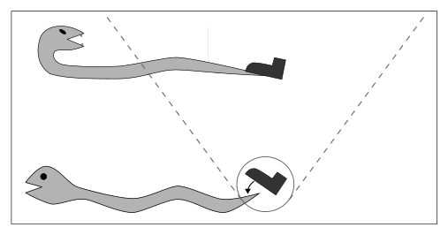
<figcaption class="paper-figure-caption"><b>Fig 1.</b> Figure 1: Pseudo-space-time diagram of Arthur Fine’s dramatic example: If you step on a snake’s tail and its head rears around in response, outside the future light cone of the stepping (i.e., sooner than would be allowed if the information about the stepping propagated to the head at the speed of light), there is a violation of relativistic dynamical locality whether or not the snake should be considered, in some sense, a non-separable, ir- reducible whole.</figcaption>
</figure>
<figure class="paper-figure-card">
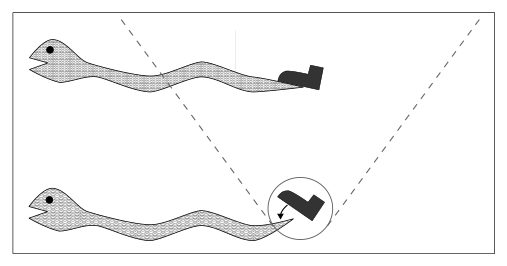
<figcaption class="paper-figure-caption"><b>Fig 2.</b> Figure 2: Suppose, modifying Fine’s example, that step- ping on the snake’s tail does not affect any properties of the snake that are localized in its head (or any other part), but instead only changes a global, irreducibly holis- tic property (misleading depicted here as a change from a wavy to a more spiky stripe pattern). Should this be considered compatible with dynamical locality?</figcaption>
</figure>
<figure class="paper-figure-card">
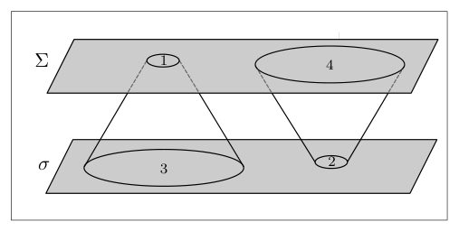
<figcaption class="paper-figure-caption"><b>Fig 3.</b> Figure 4: Diagram for the several formulations of dy- namical locality. σ and Σ are, respectively, earlier and later space-like hyperplanes. 3 is the intersection of the past light cone of 1 with σ, while 4 is the intersection of the future light cone of 2 with Σ. 3 and 2 are non- overlapping, so 2 is at space-like separation from 1. Ac- cording to Bell’s formulation of dynamical locality: “Full specification of what happens in 3 makes events in 2 ir- relevant for predictions about 1 in a locally causal the- ory.” [9]</figcaption>
</figure>
<figure class="paper-figure-card">
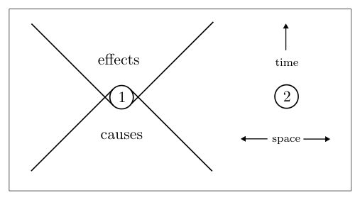
<figcaption class="paper-figure-caption"><b>Fig 4.</b> Figure 3: “Space-time location of causes and effects of events in region 1.” [9]</figcaption>
</figure>
<figure class="paper-figure-card">
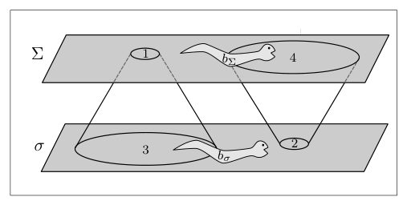
<figcaption class="paper-figure-caption"><b>Fig 5.</b> Figure 5: In a theory with snake-shaped non-local be- ables, our earlier (tacitly TELB-based) formulations of locality become ambiguous. For example: Is a snake- shaped non-local beable such as bΣ (that is partly inside of, but also partly outside of, the future light cone of re- gion 2) allowed to be among the effects of causes in 2? Is bσ (partly inside of, but also partly outside of, the past light cone of region 1) allowed to be among the causes of effects in 1?</figcaption>
</figure>
</div>

<p><strong>Summary.</strong> This paper critically examines whether Everettian Quantum Mechanics, which posits non-local ontological states, can remain compatible with relativistic causality. By analyzing how local interventions affect global, non-local properties, the authors argue that the theory likely violates the principle of dynamical locality. This forces a re-evaluation of how non-local beables must be treated in relativistic quantum theories.</p>
<p><strong>Why it may be interesting.</strong> It challenges fundamental assumptions about how quantum theories incorporating non-local ontologies can respect relativistic causality, which is a major topic in quantum foundations.</p>
<details>
<summary>Detailed structure</summary>
<p><strong>Main problem.</strong> The paper questions the consensus that Spacetime State Realism (SSR) Everettian Quantum Mechanics (EQM) is compatible with relativistic causality, despite positing ontological non-locality.</p>
<p><strong>Main result.</strong> The involvement of non-local beables introduces complications for dynamical locality, suggesting that SSR EQM might violate relativistic causality.</p>
<p><strong>Method.</strong> The argument modifies thought experiments (like the snake analogy) and analyzes the behavior of local versus non-local beables (like reduced density matrices) under measurement interventions.</p>
<p><strong>Model / system.</strong> The analysis focuses on Everettian Quantum Mechanics (EQM) under the Spacetime State Realism (SSR) interpretation, using conceptual models of localized and non-localized quantum states.</p>
<p><strong>Key observables.</strong> Local beables (Reduced Density Matrices for localized regions) and non-local beables (joint/holistic states for non-localized regions).</p>
<p><strong>Important parameters / regimes.</strong> The causal structure, specifically the relationship between causes and effects relative to the future light cone.</p>
<p><strong>Assumptions / limitations.</strong> The core assumption being challenged is that dynamical locality can be maintained when the underlying ontology includes non-separable, non-local beables.</p>
<p><strong>Figures summary.</strong> Figures illustrate the original snake thought experiment (Figure 1) and a modified version (Figure 2) showing a localized cause affecting a global, irreducible holistic property partially outside the future light cone.</p>
<p><strong>Paper structure.</strong> The paper progresses by first establishing the conflict between ontological non-locality and dynamical locality, then formalizing the conflict using modified thought experiments, and finally applying this framework to the EPR setup to show the effect on the joint state.</p>
</details>
<details>
<summary>Abstract</summary>
<p>An apparently emerging consensus holds that Everettian Quantum Mechanics (EQM), in the Spacetime State Realism (SSR) version of Wallace and Timpson, involves ontological non-locality (i.e., non-separability) but is fully compatible with the dynamical notion of locality usually taken to be required by relativity. The claim of dynamical locality is based on the fact that the local beables postulated by the theory (namely, Reduced Density Matrices, RDMs, associated with localized regions) are not affected by interventions outside their past light cones. However, the theory's non-separability means that it posits non-local beables (namely RDMs for non-localized regions) in addition to the local ones. We argue here that the involvement of non-local beables introduces complications for extant formulations of dynamical locality and at least suggests, contrary to the emerging consensus, that SSR EQM should perhaps not be considered compatible with relativistic causality after all.</p>
</details>
<p><sub><a href="#top">↑ back to top</a></sub></p>

<p><a id="paper-2609.08219"></a></p>
<h3 id="speed-limit-for-information-acquisition-in-stochastic-learning-dynamics"><a href="http://arxiv.org/abs/2609.08219v1">Speed Limit for Information Acquisition in Stochastic Learning Dynamics</a></h3>
<p><strong>Authors:</strong> Shuta Kobayashi, Andreas Dechant<br>
<strong>Type:</strong> theory · <strong>Category:</strong> statistical mechanics · <strong>PDF:</strong> <a href="https://arxiv.org/pdf/2609.08219v1">https://arxiv.org/pdf/2609.08219v1</a><br>
<strong>Analysis basis:</strong> full PDF text, analyzed in chunks
<strong>Topic relevance:</strong> <code>Keldysh / 2PI / non-Gaussian methods</code> <strong>1/5</strong> · <code>analog quantum simulation</code> <strong>1/5</strong> · <code>correlated / nonlocal dissipation</code> <strong>1/5</strong> · <code>driven-dissipative phase transition</code> <strong>1/5</strong> · <code>methods for driven-dissipative</code> <strong>1/5</strong> · <code>non-equilibrium universality</code> <strong>1/5</strong> · <code>quantum measurements</code> <strong>1/5</strong></p>
<div class="figure-strip-hint">↔ Scroll figures horizontally</div>
<div class="paper-figures-scroll">
<figure class="paper-figure-card">
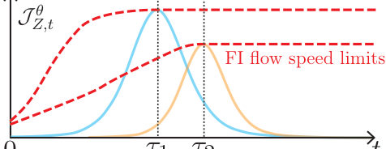
<figcaption class="paper-figure-caption"><b>Fig 1.</b> FIG. 1. Schematic illustration of Fisher-information acquisition dur- ing stochastic learning. Top: evolution of the parameter distributions pt(θ|Z) as learning proceeds from left to right. Initially, the dis- tribution is independent of the latent variable Z; during learning, information about Z is encoded in the network parameters θ, making the distributions associated with Z1 and Z2 increasingly distinguish- able. Middle: the corresponding Fisher information Fθ Z,t [Eq. (1)] accumulated in the parameters about Z1 and Z2, increases as learning proceeds. Bottom: the Fisher-information flow J θ Z,t [Eq. (3)], which quantify the instantaneous rate of information acquisition and peak at the...</figcaption>
</figure>
<figure class="paper-figure-card">
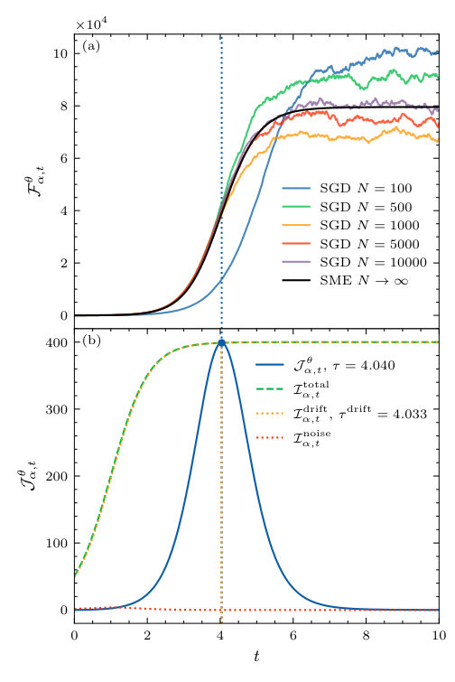
<figcaption class="paper-figure-caption"><b>Fig 2.</b> FIG. 2. Fisher information dynamics in single-parameter linear re- gression. (a) Time evolution of the Fisher information F θ α,t for SGD with different dataset sizes N, together with the SME prediction for N →∞. The finite-N deviations and fluctuations are reduced for sufficiently large N, and the SGD dynamics approaches the SME pre- diction. (b) Fisher-information flow J θ α,t (solid line) and its speed- limit bound Itotal α,t , decomposed into drift and noise contributions (dashed lines). The bound is dominated by the drift budget and be- comes tight near the peak of J θ α,t, with nearly identical characteristic times τ = 4.040 and τ drift = 4.033 (dotted lines). Parameters com- mon to...</figcaption>
</figure>
<figure class="paper-figure-card">
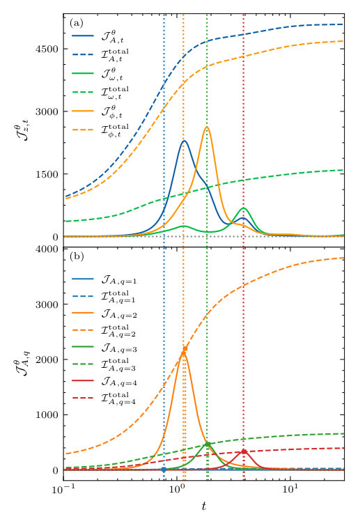
<figcaption class="paper-figure-caption"><b>Fig 3.</b> FIG. 3. Fisher-information flow dynamics in basis-function linear regression for the sinusoidal target gZ(x) = A sin(ωx + ϕ). (a) Fisher-information flows J θ z,t (solid lines) and the corresponding to- tal information budgets Itotal z,t (dashed lines) for z = A, ω, ϕ. The flows exhibit distinct characteristic time scales for different latent variables. Vertical dotted lines indicate the characteristic times τq, where q indexes the eigenmodes in descending order of their eiven- values, λ1 ≥λ2 ≥· · · . (b) Mode-resolved Fisher-information flows JA,q (solid lines) and the corresponding information budgets Itotal A,q (dashed lines) for q = 1, . . . , 4. Circular markers indicate the max- ima...</figcaption>
</figure>
<figure class="paper-figure-card">
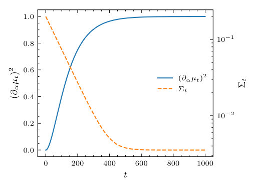
<figcaption class="paper-figure-caption"><b>Fig 4.</b> FIG. 4. Time evolution of the numerator (∂αµt)2 and denominator Σt of the dominant Fisher information contribution in Eq. (23). The numerator increases from zero and saturates at unity, whereas the denominator decreases toward the stationary variance set by SGD fluctuations. Their competing time dependences cause the Fisher- information flow to reach a maximum at an intermediate time.</figcaption>
</figure>
</div>

<p><strong>Summary.</strong> This work establishes a Fisher-information speed limit that quantifies the maximum rate at which a neural network can learn about underlying latent variables during stochastic training. By modeling SGD as a stochastic process, the authors decompose this rate into deterministic (drift) and fluctuating (noise) components. This provides a powerful, information-theoretic diagnostic tool for understanding the efficiency and limits of machine learning algorithms.</p>
<p><strong>Why it may be interesting.</strong> The use of information-theoretic speed limits to characterize the dynamics of complex, non-equilibrium learning processes provides a quantitative physical analogy to relaxation dynamics seen in many-body systems or open quantum systems.</p>
<details>
<summary>Detailed structure</summary>
<p><strong>Main problem.</strong> To derive a Fisher-information flow speed limit that bounds the rate at which trainable parameters in neural networks acquire information about latent variables during stochastic learning.</p>
<p><strong>Main result.</strong> The rate of information acquisition is bounded by the sum of drift and noise contributions, and this bound is shown to be tight at the peak of the flow in analytically tractable models.</p>
<p><strong>Method.</strong> The authors formulate Stochastic Gradient Descent (SGD) as a Markovian stochastic process and utilize the Fisher information framework to derive an upper bound on the information flow.</p>
<p><strong>Model / system.</strong> The model is stochastic learning dynamics, specifically analyzing SGD applied to supervised learning where data is generated from a latent variable $Z$. The analysis is specialized to basis-function linear regression, whose dynamics near convergence reduce to an Ornstein–Uhlenbeck process.</p>
<p><strong>Key observables.</strong> Fisher-information flow ($J_{	heta, \chi}^{Z,t}$), Fisher information ($F_{	heta}^{Z,t}$), Drift information budget ($I_{	ext{drift}, \chi}^{Z,t}$), and Noise information budget ($I_{	ext{noise}, \chi}^{Z,t}$).</p>
<p><strong>Important parameters / regimes.</strong> Relaxation rates ($\lambda_i$), characteristic time scales ($   au_{\chi, i}$), and the ratio of initial to final covariance values.</p>
<p><strong>Assumptions / limitations.</strong> The mini-batch fluctuation is approximated as Gaussian, and the analysis relies on deriving an upper bound, which is not necessarily an exact decomposition of the actual flow.</p>
<p><strong>Figures summary.</strong> Figures illustrate the time evolution of Fisher information and the instantaneous flow, comparing the measured flow against the theoretical speed limit derived from the drift and noise components, showing the bound is tight at the peak.</p>
<p><strong>Paper structure.</strong> The paper establishes the general Fisher-information flow speed limit for SGD, then specializes this framework to linear regression. It analyzes the dynamics using modal decomposition, showing that the peak time of the information flow matches the relaxation time of the drift budget for each mode.</p>
</details>
<details>
<summary>Abstract</summary>
<p>Neural networks acquire internal representations through learning. In this work, we formulate stochastic gradient descent (SGD) as a Markovian stochastic process and derive a Fisher-information flow speed limit that bounds the rate at which trainable parameters can acquire information about latent variables in the data-generating process. The resulting inequality decomposes the information flow into drift and noise contributions, thereby quantifying the roles of deterministic learning forces and SGD-induced fluctuations from an information-theoretic perspective. We verify the bound in analytically tractable basis-function linear regression, where the information budget predicted by the bound reproduces the ordering and characteristic time scales with which different latent variables are encoded in the learned parameters. These results establish Fisher-information speed limits as a quantitative framework for diagnosing when and how different aspects of the data-generating mechanism are acquired during stochastic learning.</p>
</details>
<p><sub><a href="#top">↑ back to top</a></sub></p>

<p><a id="paper-2609.07832"></a></p>
<h3 id="restricted-typicality-in-non-equilibrium-quantum-many-body-systems"><a href="http://arxiv.org/abs/2609.07832v1">Restricted typicality in non-equilibrium quantum many-body systems</a></h3>
<p><strong>Authors:</strong> Konrad Pawlik, Piotr Sierant, Jakub Zakrzewski<br>
<strong>Type:</strong> theory · <strong>Category:</strong> statistical mechanics · <strong>PDF:</strong> <a href="https://arxiv.org/pdf/2609.07832v1">https://arxiv.org/pdf/2609.07832v1</a><br>
<strong>Analysis basis:</strong> full PDF text, analyzed in chunks
<strong>Topic relevance:</strong> <code>Keldysh / 2PI / non-Gaussian methods</code> <strong>1/5</strong> · <code>analog quantum simulation</code> <strong>1/5</strong> · <code>methods for driven-dissipative</code> <strong>1/5</strong> · <code>non-equilibrium universality</code> <strong>1/5</strong> · <code>quantum measurements</code> <strong>1/5</strong> · <code>scars &amp; prethermalization</code> <strong>1/5</strong></p>
<div class="figure-strip-hint">↔ Scroll figures horizontally</div>
<div class="paper-figures-scroll">
<figure class="paper-figure-card">
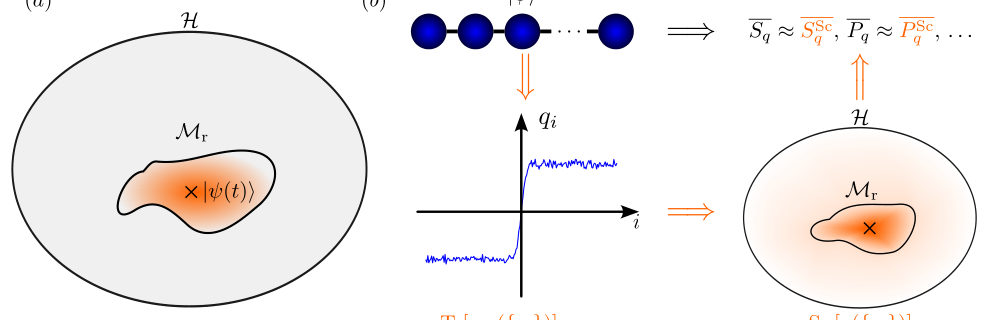
<figcaption class="paper-figure-caption"><b>Fig 1.</b> FIG. 1. Global restricted typicality and the application of the Scrooge ensemble framework to hydrodynamics. (a) Conceptual repre- sentation of global restricted typicality within the full many-body Hilbert space H. The exact time-evolved pure state |ψ(t)⟩(black cross) can be effectively described as a typical member of a dynamically restricted manifold Mr (orange), defined by the effective macroscopic constraints obeyed by |ψ(t)⟩. The global properties of |ψ(t)⟩correspond to a weighted average (indicated by color intensity) over this typ- ical set. (b) Operational pipeline (orange arrows) for utilizing the Scrooge ensemble to capture global restricted typicality and reconstruct...</figcaption>
</figure>
<figure class="paper-figure-card">
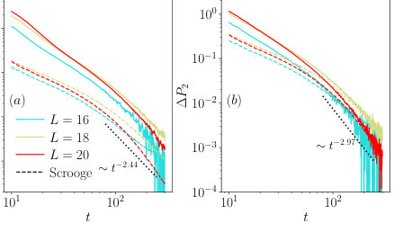
<figcaption class="paper-figure-caption"><b>Fig 2.</b> FIG. 3. Late-time hydrodynamic relaxation. Time evolution of the initial Néel state |ψ0⟩= |↑↓· · ·⟩under the dynamics of the Floquet XXZ model [Eq. (19)] for system sizes L ≥16. The panels show (a) the distance from the infinite-time saturation value of the second Rényi entanglement entropy, ∆S2, and (b) the corresponding dis- tance for the participation entropy, ∆P2. Solid lines denote the exact microscopic unitary dynamics, and dashed lines represent the ana- lytical Scrooge ensemble predictions constructed from instantaneous local profiles [Eqs. (17) and (13)]. Dotted lines indicate power-law fits for L = 20 over the time interval t ∈[80, 250], which are hor- izontally offset for...</figcaption>
</figure>
<figure class="paper-figure-card">
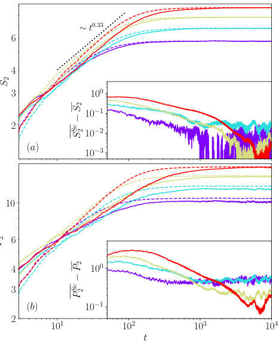
<figcaption class="paper-figure-caption"><b>Fig 3.</b> FIG. 2. Hydrodynamic constraints on nonlinear quantum in- formation. Time evolution of the initial domain-wall state |ψ0⟩= |↑· · · ↑↓· · · ↓⟩governed by the Floquet XXZ model [Eq. (19)] for various system sizes L, plotted on a log-log scale. The panels show (a) the second Rényi entanglement entropy S2 and (b) the participa- tion entropy P2. Solid lines denote the exact unitary dynamics, and dashed lines represent the analytical Scrooge ensemble predictions constructed from instantaneous local profiles [Eqs. (17) and (13)]. Panel (a) includes a dotted power-law guide to the eye, fitted for L = 20 over the time window t ∈[10, 90] and horizontally off- set for improved readability. The insets...</figcaption>
</figure>
<figure class="paper-figure-card">
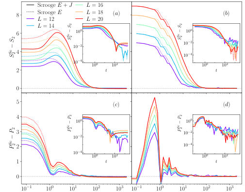
<figcaption class="paper-figure-caption"><b>Fig 4.</b> FIG. 4. Robustness of the late-time predictions of the Scrooge ensemble against minimal-information initial states. Time evo- lution of the deviations between the Scrooge ensemble predictions and exact dynamics for (a, b) the second Rényi entanglement en- tropy S2 and (c, d) the participation entropy P2. The transverse- field Ising model (TFIM) is initialized in states that provide min- imal local information to the ensemble: a set of random product states |ψ0⟩= |s1, . . . , sL⟩, where the plotted quantities represent the statistical average of the entropies computed for each individ- ual pure-state realization (a, c), and a uniformly polarized state |ψ0⟩= |+y, . . . , +y⟩(b, d). Despite...</figcaption>
</figure>
</div>

<p><strong>Summary.</strong> This paper addresses the challenge of tracking complex quantum many-body dynamics by introducing the 'Scrooge ensemble.' By constraining this maximum-entropy ensemble only with the expectation values of slow, conserved modes, the authors demonstrate a principle called 'global restricted typicality.' This allows for the accurate reconstruction of nonlinear quantum properties, like entanglement entropy, even when standard hydrodynamic methods are insufficient.</p>
<p><strong>Why it may be interesting.</strong> It provides a powerful, non-standard statistical tool (the Scrooge ensemble) to extract global, non-linear information about non-equilibrium quantum states, bridging the gap between local observables (hydrodynamics) and full quantum state characterization.</p>
<details>
<summary>Detailed structure</summary>
<p><strong>Main problem.</strong> Characterizing the time evolution of generic quantum many-body systems is computationally intractable due to the exponential scaling of state representation.</p>
<p><strong>Main result.</strong> The authors introduce 'global restricted typicality,' showing that complex, nonlinear quantum properties can be accurately reconstructed by constraining the maximum-entropy Scrooge ensemble using only the system's slow, conserved modes.</p>
<p><strong>Method.</strong> The core method involves constructing the Scrooge ensemble, which maximizes information entropy subject to fixing the first statistical moments (expectation values) of the slow modes, thereby bypassing standard coarse-graining assumptions.</p>
<p><strong>Model / system.</strong> The work applies to generic quantum many-body systems, particularly those exhibiting a timescale separation where dynamics are governed by the transport of conserved charges, such as those studied in quantum hydrodynamics.</p>
<p><strong>Key observables.</strong> Entanglement entropy (half-chain) and participation entropy in the computational basis.</p>
<p><strong>Important parameters / regimes.</strong> Timescale separation, slow modes (conserved charges), and the constraints derived from the system's slow dynamics.</p>
<p><strong>Assumptions / limitations.</strong> The approach assumes a timescale separation and that the dynamics are governed by the transport of conserved charges, allowing the slow modes to constrain the global state.</p>
<p><strong>Figures summary.</strong> Figure 1 conceptually illustrates global restricted typicality, showing the time-evolved state lying on a dynamically restricted manifold, and outlines the operational pipeline from microstate to the Scrooge ensemble.</p>
<p><strong>Paper structure.</strong> The paper develops the theoretical framework by defining the Scrooge ensemble, applying it to systems with slow dynamics, and demonstrating its ability to recover nonlinear quantum properties by constraining the ensemble solely with slow mode expectation values.</p>
</details>
<details>
<summary>Abstract</summary>
<p>Characterizing the time evolution of generic quantum many-body systems is a fundamental challenge, as representing the exact state requires exponentially scaling computational resources. While hydrodynamics and statistical mechanics successfully simplify this task by predicting the expectation values of local observables, these macroscopic frameworks provide no information about nonlinear characteristics of the quantum state. In this work, we demonstrate that for systems exhibiting a timescale separation, with dynamics governed by the transport of conserved charges, this lost information can be systematically recovered. By constraining the maximum-entropy Scrooge ensemble solely by the system's slow modes, we accurately reconstruct complex, nonlinear quantum properties of the global time-evolved state, including the half-chain entanglement entropy and the participation entropy in the computational basis. Our results generalize the paradigm of canonical typicality, revealing that a hydrodynamically bottlenecked system behaves as a typical pure state within a dynamically restricted submanifold of the Hilbert space - a phenomenon we term global restricted typicality.</p>
</details>
<p><sub><a href="#top">↑ back to top</a></sub></p>

<p><a id="paper-2609.08752"></a></p>
<h3 id="quantum-speed-limits-based-on-quantifiers-of-quantum-state-texture"><a href="http://arxiv.org/abs/2609.08752v1">Quantum speed limits based on quantifiers of quantum-state texture</a></h3>
<p><strong>Authors:</strong> Yuhang Xie, Yanjun Chu, Chenyang Cui, Shao-Ming Fei<br>
<strong>Type:</strong> theory · <strong>Category:</strong> other · <strong>PDF:</strong> <a href="https://arxiv.org/pdf/2609.08752v1">https://arxiv.org/pdf/2609.08752v1</a><br>
<strong>Analysis basis:</strong> full PDF text, analyzed in chunks
<strong>Topic relevance:</strong> <code>correlated / nonlocal dissipation</code> <strong>1/5</strong> · <code>driven-dissipative phase transition</code> <strong>1/5</strong> · <code>methods for driven-dissipative</code> <strong>1/5</strong> · <code>non-equilibrium universality</code> <strong>1/5</strong> · <code>quantum measurements</code> <strong>1/5</strong></p>
<div class="figure-strip-hint">↔ Scroll figures horizontally</div>
<div class="paper-figures-scroll">
<figure class="paper-figure-card">
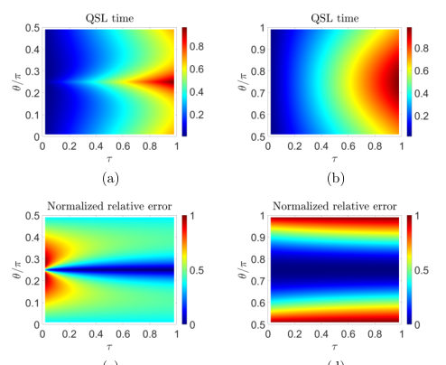
<figcaption class="paper-figure-caption"><b>Fig 1.</b> Figure 1: The QSL time τ QSL tr and normalized relative error ˜δtr(τ) of dephasing dynamics with respect to different initial states.</figcaption>
</figure>
<figure class="paper-figure-card">
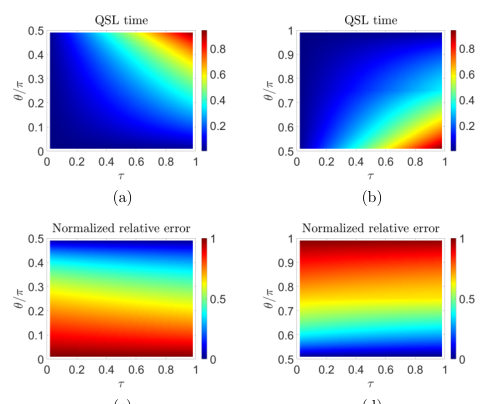
<figcaption class="paper-figure-caption"><b>Fig 2.</b> Figure 2: The QSL time τ QSL ru and normalized relative error ˜δru(τ) of dissipative dynamics corresponding to different initial states.</figcaption>
</figure>
<figure class="paper-figure-card">
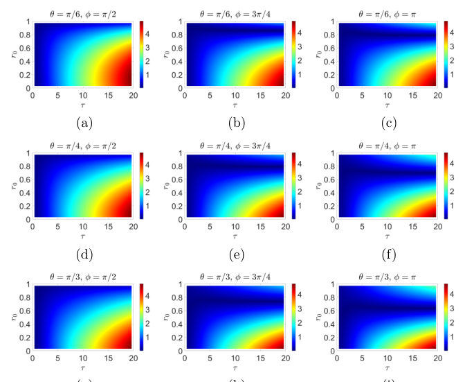
<figcaption class="paper-figure-caption"><b>Fig 3.</b> Figure 3: Density plots of the texture measure-based QSL time τ QSL JS as a function of the parameters τ and r ∈[0, 1), with θ ∈{π/6, π/4, π/3} and ϕ ∈{π/2, 3π/4, π} for initial single-qubit states subject to the amplitude damping channel.</figcaption>
</figure>
<figure class="paper-figure-card">
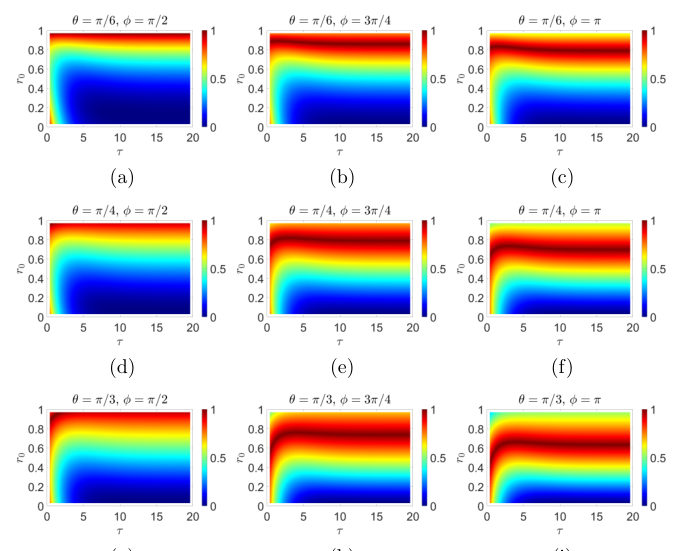
<figcaption class="paper-figure-caption"><b>Fig 4.</b> Figure 4: Density plots of the normalized relative error ˜δJS(τ) as a function of the parameters τ and r ∈[0, 1), with θ ∈{π/6, π/4, π/3} and ϕ ∈{π/2, 3π/4, π} for initial single-qubit states subject to the amplitude damping channel.</figcaption>
</figure>
</div>

<p><strong>Summary.</strong> This paper establishes a theoretical link between Quantum Speed Limits and Quantum-State Texture, using measures like trace distance and Jensen-Shannon divergence. By analyzing specific open quantum systems, the authors derive quantitative lower bounds on the minimum evolution time. This framework offers new diagnostic tools for understanding fundamental constraints in quantum control and metrology.</p>
<p><strong>Why it may be interesting.</strong> This work is highly relevant as it provides a generalized framework for deriving fundamental time constraints in open quantum systems, connecting resource theory concepts (QST) directly to fundamental physical limits (QSLs).</p>
<details>
<summary>Detailed structure</summary>
<p><strong>Main problem.</strong> The paper investigates the fundamental lower bounds on the time scale of quantum evolution (Quantum Speed Limits, QSLs) by linking them to the quantitative measure of quantum-state texture (QST).</p>
<p><strong>Main result.</strong> QSLs derived from various QST quantifiers, such as trace distance, state rugosity, and Jensen-Shannon divergence, successfully capture the fundamental constraints on quantum evolutionary speed.</p>
<p><strong>Method.</strong> The authors derive lower bounds ($  au \ge  au_{QSL}$) by analyzing the time evolution of the chosen QST measure using various mathematical tools, including analyzing the time derivative of the measure.</p>
<p><strong>Model / system.</strong> The analysis considers general quantum systems undergoing evolution, specifically modeling dephasing and dissipative dynamics using master equations. Examples include a two-level atom coupled to a bosonic reservoir or analyzed via the amplitude damping channel.</p>
<p><strong>Key observables.</strong> Quantum Speed Limits ($    au_{QSL}$), Trace Distance ($\Delta_{ ext{tr}}$), State Rugosity ($\Delta R$), Jensen-Shannon Divergence (JSD), and the normalized relative error ($  ilde{\delta}$).</p>
<p><strong>Important parameters / regimes.</strong> Dephasing rate ($\gamma_t$), cavity decay rate ($\gamma_t$), and initial state parameters ($  heta$).</p>
<p><strong>Assumptions / limitations.</strong> The analysis involves approximations for non-unitary dynamics (CPTP maps) and relies on defining the QSL based on the rate of change of the QST measure.</p>
<p><strong>Figures summary.</strong> The notes mention numerical observations showing the behavior of $ au_{QSL}^{JS}$ and the relative error $ ilde{\delta}_{JS}(  au)$ for different parameter regimes, indicating when the bound is tight or loose.</p>
<p><strong>Paper structure.</strong> The paper systematically introduces QSLs and QST, derives bounds using different quantifiers (trace distance, rugosity, JSD), and applies these derivations to specific physical models like dephasing and amplitude damping channels.</p>
</details>
<details>
<summary>Abstract</summary>
<p>Quantum speed limits impose intrinsic lower bounds on the shortest time scale for quantum system evolution. As an emerging paradigm in quantum resource theory, quantum-state texture has attracted research interest amid the rapid advancement of quantum theory. Herein, we investigate the interplay between quantum speed limits and quantum-state texture via several canonical quantifiers, including trace distance, state rugosity and Jensen-Shannon divergence. To demonstrate our findings, we analyze the minimum evolution time of physical systems subject to dephasing and dissipative dynamics. For the Jensen-Shannon divergence, we further explore nonunitary dynamics described by completely positive and trace-preserving maps, taking the amplitude damping channel as a typical example. In addition, we explore the tightness of these bounds in the considered dynamical models. Our results reveal that quantum speed limits derived from quantum-state texture capture the fundamental constraints on quantum evolutionary speed, with promising applications in quantum computing, quantum control and quantum metrology.</p>
</details>
<p><sub><a href="#top">↑ back to top</a></sub></p>

<p><a id="paper-2609.09019"></a></p>
<h3 id="modular-commutator-as-a-robust-topological-invariant-and-approximate-markovianity"><a href="http://arxiv.org/abs/2609.09019v1">Modular commutator as a robust topological invariant and approximate Markovianity</a></h3>
<p><strong>Authors:</strong> Tai Hsuan Yang<br>
<strong>Type:</strong> theory · <strong>Category:</strong> strongly correlated electrons · <strong>PDF:</strong> <a href="https://arxiv.org/pdf/2609.09019v1">https://arxiv.org/pdf/2609.09019v1</a><br>
<strong>Analysis basis:</strong> full PDF text, analyzed in chunks
<strong>Topic relevance:</strong> <code>analog quantum simulation</code> <strong>1/5</strong> · <code>correlated / nonlocal dissipation</code> <strong>1/5</strong> · <code>driven-dissipative phase transition</code> <strong>1/5</strong> · <code>quantum measurements</code> <strong>1/5</strong></p>
<div class="figure-strip-hint">↔ Scroll figures horizontally</div>
<div class="paper-figures-scroll">
<figure class="paper-figure-card">
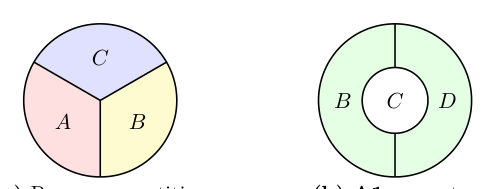
<figcaption class="paper-figure-caption"><b>Fig 1.</b> Figure 1: The two geometries used in the introduction. (a) The three-sector disk partition defining the modular commutator J(A, B, C) and Hall conductance estimator Σ(A, B, C); the cyclic order of A, B, C (clockwise or counterclockwise) fixes the response orientation and hence the sign convention. (b) The local A1 geometry, in which the annular neighborhood of C is split into side regions B and D.</figcaption>
</figure>
<figure class="paper-figure-card">
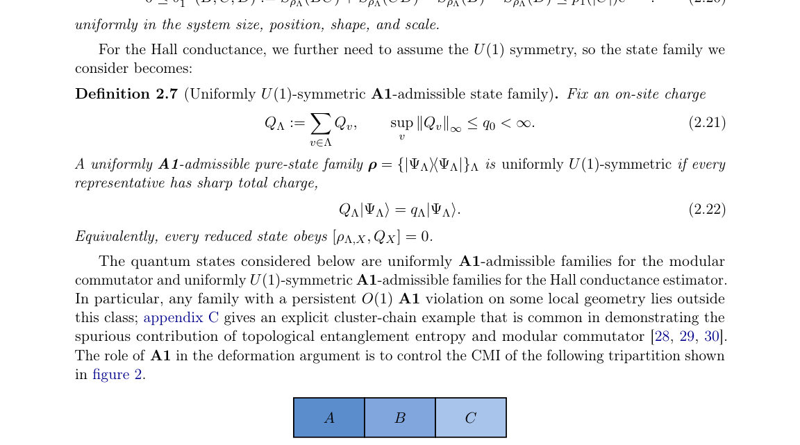
<figcaption class="paper-figure-caption"><b>Fig 2.</b> Figure 2: The principal Markov partition A|B|C. For any subsystem A of the purifying complement of the A1 geometry, approximate A1 controls the conditional mutual information I(A : C|B).</figcaption>
</figure>
<figure class="paper-figure-card">
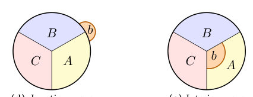
<figcaption class="paper-figure-caption"><b>Fig 3.</b> Figure 3: Representative local geometries in the deformation proof for the modular commutator. Panels (a) and (b) add an endpoint patch while keeping BC or AB, respectively, fixed. Panel (c) adds a patch to the middle region, buffered from both endpoints. Junction patches such as (d) are converted by an exact complementary-region flip into an endpoint or middle geometry represented by (e). The orange patch lies in the complementary region D before reassignment; cyclic rotations cover the remaining cases.</figcaption>
</figure>
<figure class="paper-figure-card">
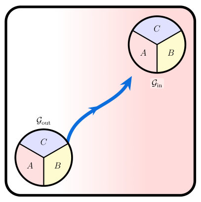
<figcaption class="paper-figure-caption"><b>Fig 4.</b> Figure 4: Bubble comparison used in theorem 3.11. The partition is deformed from Gout, where the bubble state agrees with ρα, to Gin, where it is locally close to ρβ. These two comparisons produce the errors EJ and ΩJ, respectively.</figcaption>
</figure>
<figure class="paper-figure-card">
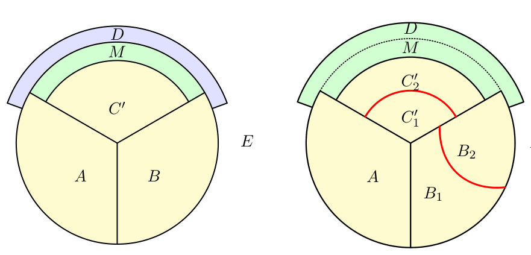
<figcaption class="paper-figure-caption"><b>Fig 5.</b> Figure 5: Geometries used in the exact no-go proof. (a) The original response region is C = C′M; D is an outer collar and E = ABCD. The two Markov decompositions are applied to the ordered tripartitions E|D|C and C′|M|D. (b) The refined partition with B = B1B2 and C′ = C′ 1C′ 2.5</figcaption>
</figure>
</div>

<p><strong>Summary.</strong> This paper rigorously investigates how topological invariants, such as the modular commutator and Hall conductance, maintain their robustness when the idealized local quantum Markov condition is only approximately met. By combining continuity proofs with finite-time dynamical analysis, the authors establish that these invariants remain asymptotically invariant in gapped phases. This work extends theoretical no-go theorems by providing quantitative bounds on the necessary entanglement structure required to support non-zero topological responses.</p>
<p><strong>Why it may be interesting.</strong> It provides rigorous mathematical tools to test the stability of topological invariants in realistic, non-ideal physical systems where exact symmetries are broken by finite-size effects or dynamics.</p>
<details>
<summary>Detailed structure</summary>
<p><strong>Main problem.</strong> To determine the robustness and invariance of the modular commutator and Hall conductance estimator as topological invariants when the exact local quantum Markov condition is violated.</p>
<p><strong>Main result.</strong> The modular commutator and Hall conductance estimator remain asymptotically invariant under topology-preserving deformations if the local quantum Markov property holds approximately. Furthermore, a quantitative lower bound is established for the conditional mutual information required to sustain a non-zero invariant.</p>
<p><strong>Method.</strong> The analysis combines proofs of asymptotic invariance using trace-norm continuity, the study of finite-time dynamics generated by modular Hamiltonians, and deriving quantitative bounds on entanglement measures.</p>
<p><strong>Model / system.</strong> The study focuses on two-dimensional gapped topological phases, particularly chiral topological phases characterized by the chiral central charge ($c_-$) and systems exhibiting Hall conductance ($\sigma_{xy}$).</p>
<p><strong>Key observables.</strong> Modular commutator ($J$), Hall conductance estimator ($\Sigma$), and Conditional Mutual Information ($I(A:C|B)$).</p>
<p><strong>Important parameters / regimes.</strong> The degree of violation of the local quantum Markov condition (A1), and the exponential decay rates of entanglement measures.</p>
<p><strong>Assumptions / limitations.</strong> The analysis assumes the existence of an 'approximately local quantum Markov property' and relies on asymptotic limits and continuity arguments.</p>
<p><strong>Figures summary.</strong> Figure 1 illustrates the geometry for the three-sector disk partition used for calculating $J$ and $\Sigma$, alongside the local geometry related to the A1 condition.</p>
<p><strong>Paper structure.</strong> The paper progresses by first establishing asymptotic invariance under approximate Markov conditions, then proving trace-norm continuity, and finally deriving quantitative lower bounds on the required conditional mutual information by analyzing finite-time dynamics.</p>
</details>
<details>
<summary>Abstract</summary>
<p>The modular commutator provides a bulk, local, single-wave-function probe of the chiral central charge $c_-$ for gapped ground states. Its invariance under deformations was previously established under a local quantum Markov condition---namely, the conditional mutual information $I(A:C|B)$ is zero for all tripartitions of a disk into three consecutive strips A, B, and C \cite{Modular-commutator-Gapped}. However, the local quantum Markov condition also forces the probe to vanish, leaving open whether modular commutator remains robust in physically relevant states where the Markov property holds only approximately. In this paper, we resolve this tension for finite-dimensional Hilbert spaces: the approximate local quantum Markov property implies the change of the modular commutator under topology-preserving deformations vanishes asymptotically. We next prove trace-norm continuity of the modular commutator. Combining deformation invariance with trace-norm continuity, we establish that the modular commutator remains asymptotically invariant within gapped quantum phases connected by quasi-local unitary paths that preserve the approximate local quantum Markov condition. Conversely, by analyzing finite-time dynamics generated by modular Hamiltonians, we derive a quantitative lower bound on the conditional mutual information required for a non-zero modular commutator: $I(A:C|B)$ across such strip tripartitions cannot decay faster than exponentially with the width of B given that the state satisfies entanglement area law, extending the exact no-go theorem of \cite{strict-J-2024} to a quantitative finite bound . Finally, we demonstrate that those conclusions apply equally to the Hall conductance estimator \cite{FanSahayVishwanath2023}.</p>
</details>
<p><sub><a href="#top">↑ back to top</a></sub></p>

<p><a id="paper-2609.08834"></a></p>
<h3 id="from-local-context-to-climate-science-low-cost-experimentation-in-the-initial-training-of-physics-teachers"><a href="http://arxiv.org/abs/2609.08834v1">From Local Context to Climate Science: Low-Cost Experimentation in the Initial Training of Physics Teachers</a></h3>
<p><strong>Authors:</strong> André A. A. Marinho, Edson R. L. Lopes, Jhon KF V. Silva, Mariana S. Costa, Maria A. Morais<br>
<strong>Type:</strong> experiment · <strong>Category:</strong> statistical mechanics · <strong>PDF:</strong> <a href="https://arxiv.org/pdf/2609.08834v1">https://arxiv.org/pdf/2609.08834v1</a><br>
<strong>Analysis basis:</strong> full PDF text, analyzed in chunks
<strong>Topic relevance:</strong> <code>analog quantum simulation</code> <strong>1/5</strong> · <code>driven-dissipative phase transition</code> <strong>1/5</strong> · <code>non-equilibrium universality</code> <strong>1/5</strong></p>
<div class="figure-strip-hint">↔ Scroll figures horizontally</div>
<div class="paper-figures-scroll">
<figure class="paper-figure-card">
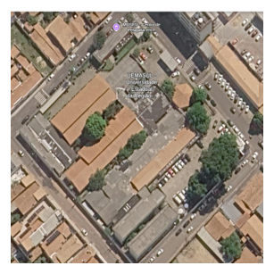
<figcaption class="paper-figure-caption"><b>Fig 1.</b> Figure 1: Aerial view of the UEMASUL headquarters. Source: Google Earth (2026) [20]. Map data.: Google, Maxar Technologies..</figcaption>
</figure>
<figure class="paper-figure-card">

<figcaption class="paper-figure-caption"><b>Fig 2.</b> Figure 2: Our prototype</figcaption>
</figure>
<figure class="paper-figure-card">
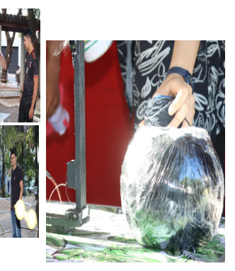
<figcaption class="paper-figure-caption"><b>Fig 3.</b> Figure 3: Science outreach activities</figcaption>
</figure>
<figure class="paper-figure-card">
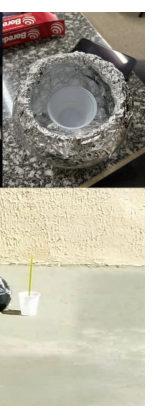
<figcaption class="paper-figure-caption"><b>Fig 4.</b> Figure 4: Date collection equipment and location</figcaption>
</figure>
<figure class="paper-figure-card">
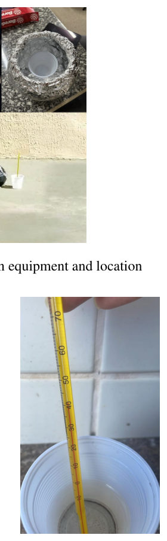
<figcaption class="paper-figure-caption"><b>Fig 5.</b> Figure 5: Some measurements</figcaption>
</figure>
</div>

<p><strong>Summary.</strong> This paper details a low-cost experiment using a thermal simulator to teach physics concepts related to energy balance and heat transfer using solar radiation as the energy source. The study successfully measured a significant temperature difference between the simulated and control environments. Crucially, it emphasizes the educational value of such models while cautioning against overinterpreting local experimental results as global climate evidence.</p>
<p><strong>Why it may be interesting.</strong> While the core physics is classical thermodynamics and heat transfer, the rigorous discussion of energy balance, non-equilibrium processes, and the limitations of simplified models resonates with the boundary conditions and energy conservation principles central to many-body physics.</p>
<details>
<summary>Detailed structure</summary>
<p><strong>Main problem.</strong> The study addresses the educational challenge of connecting physical concepts, empirical evidence, and socially relevant environmental issues like climate change.</p>
<p><strong>Main result.</strong> The low-cost simulator successfully demonstrated a measurable thermal difference between a confined and an open system, proving its educational potential for teaching energy balance.</p>
<p><strong>Method.</strong> The researchers conducted a low-cost experimental investigation by building a simplified thermal simulator and comparing its temperature evolution to an open control system exposed to solar radiation over 11 days.</p>
<p><strong>Model / system.</strong> The system is a simplified thermal simulator designed to model energy balance concepts related to the greenhouse effect, comparing a confined system against an open control system exposed to solar radiation.</p>
<p><strong>Key observables.</strong> Average temperature inside the simulator (45.91°C), average temperature in the external control system (38.58°C), and the mean temperature difference (7.33°C).</p>
<p><strong>Important parameters / regimes.</strong> The analysis involves concepts like electromagnetic radiation, energy balance, heat transfer, and temperature gradients ($\Delta T$).</p>
<p><strong>Assumptions / limitations.</strong> The observed temperature rise should not be interpreted as a direct measure of the atmospheric greenhouse effect because the apparatus involves both radiative and non-radiative heat transfer mechanisms.</p>
<p><strong>Figures summary.</strong> Figures show the location of the investigation and the temporal evolution of temperature differences ($\Delta T$), with tables summarizing daily statistical comparisons of temperatures.</p>
<p><strong>Paper structure.</strong> The paper establishes the problem (climate change), details the low-cost experimental setup and measurements over 11 days, presents quantitative results showing measurable thermal differences, and concludes by emphasizing the pedagogical value while strictly limiting the interpretation of the findings.</p>
</details>
<details>
<summary>Abstract</summary>
<p>Climate change poses a major scientific, environmental, and educational challenge, requiring approaches that connect physical concepts, empirical evidence, and socially relevant environmental issues. This study presents and analyzes a low-cost experimental investigation developed within the "Physics and the Environment" course of a Physics teacher training program at the State University of the Tocantina Region of Maranhão (UEMASUL), Brazil. The experiment involved constructing a simplified thermal simulator using accessible materials and comparing a confined system with an open control system, both exposed simultaneously to solar radiation. The results showed that the average temperature inside the simulator was $45.91^{\circ}\mathrm{C}$, compared to $38.58^{\circ}\mathrm{C}$ in the external control system, corresponding to a mean temperature difference of $7.33^{\circ}\mathrm{C}$ (among other analyses). These results demonstrate that the experimental setup was capable of producing and measuring a significant thermal difference between the two systems. However, the observed temperature rise should not be interpreted as a direct measure of the atmospheric greenhouse effect, given that the experimental apparatus involves both radiative and non-radiative heat transfer mechanisms. The study emphasizes the educational potential of low-cost experimentation as a strategy to integrate electromagnetic radiation, energy balance, temperature, heat transfer, and climate science into the initial training of physics teachers. It also highlights the importance of explicitly discussing the limitations of experimental models and distinguishing local experimental evidence from conclusions regarding global climate processes.</p>
</details>
<p><sub><a href="#top">↑ back to top</a></sub></p>

<p><a id="paper-2609.08584"></a></p>
<h3 id="gravitational-decoherence-from-soft-graviton-math554math-matrix"><a href="http://arxiv.org/abs/2609.08584v1">Gravitational decoherence from soft-graviton $S$-matrix</a></h3>
<p><strong>Authors:</strong> Hiroki Matsui<br>
<strong>Type:</strong> theory · <strong>Category:</strong> other · <strong>PDF:</strong> <a href="https://arxiv.org/pdf/2609.08584v1">https://arxiv.org/pdf/2609.08584v1</a><br>
<strong>Analysis basis:</strong> full PDF text, analyzed in chunks
<strong>Topic relevance:</strong> <code>Keldysh / 2PI / non-Gaussian methods</code> <strong>1/5</strong> · <code>correlated / nonlocal dissipation</code> <strong>1/5</strong> · <code>quantum measurements</code> <strong>1/5</strong></p>
<div class="figure-strip-hint">↔ Scroll figures horizontally</div>
<div class="paper-figures-scroll">
<figure class="paper-figure-card">
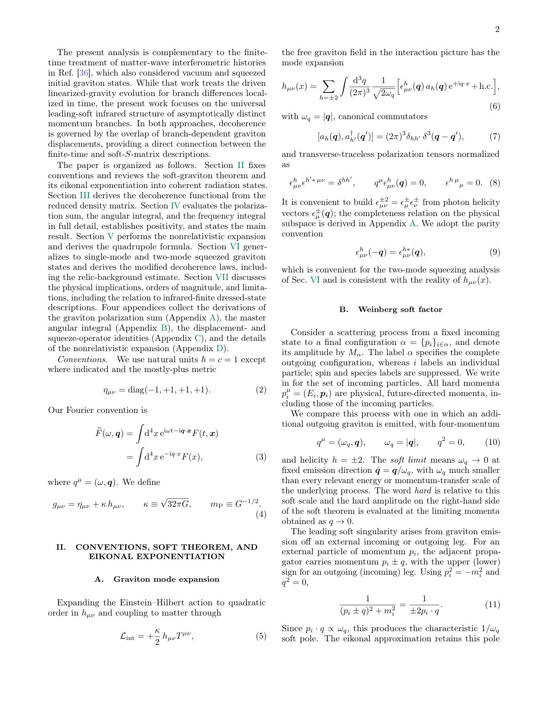
<figcaption class="paper-figure-caption"><b>Fig 1.</b> Low-resolution page preview, page 2</figcaption>
</figure>
<figure class="paper-figure-card">
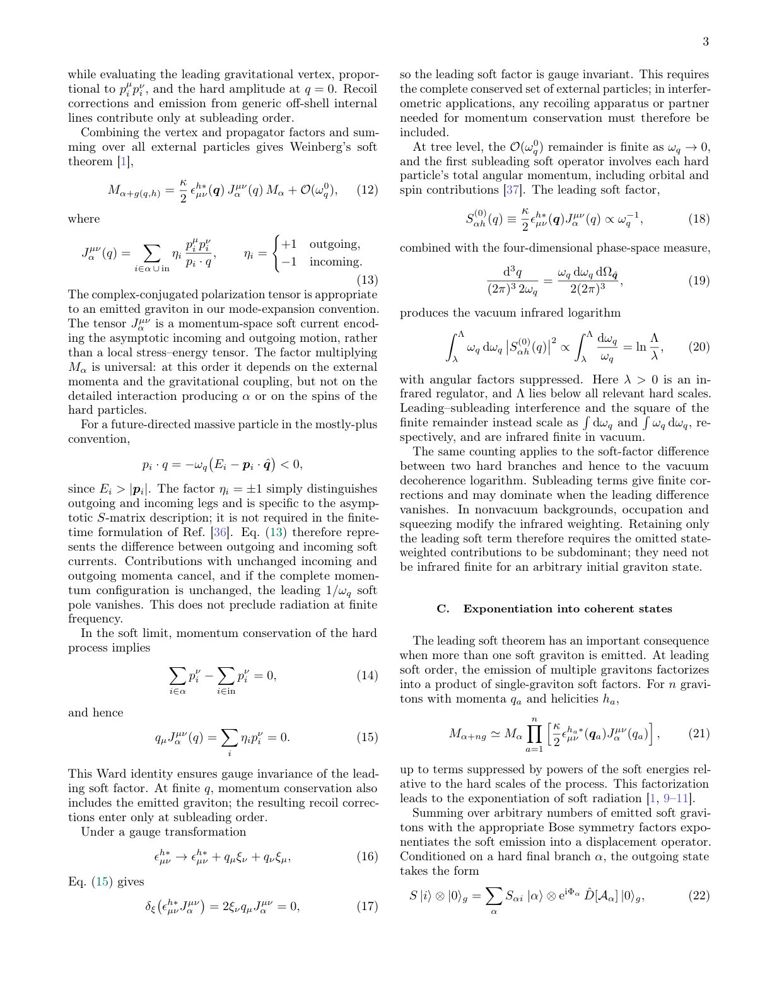
<figcaption class="paper-figure-caption"><b>Fig 2.</b> Low-resolution page preview, page 3</figcaption>
</figure>
<figure class="paper-figure-card">
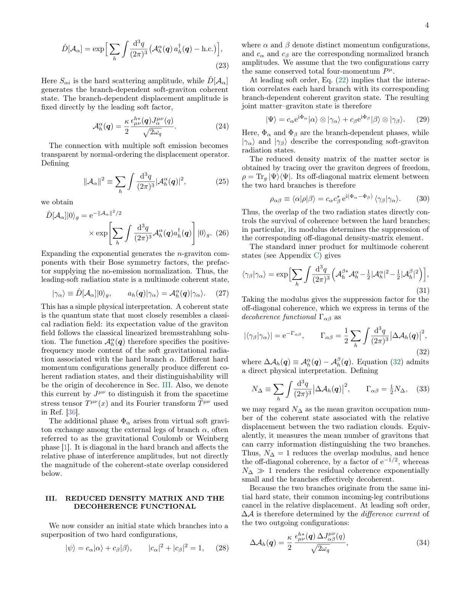
<figcaption class="paper-figure-caption"><b>Fig 3.</b> Low-resolution page preview, page 4</figcaption>
</figure>
<figure class="paper-figure-card">
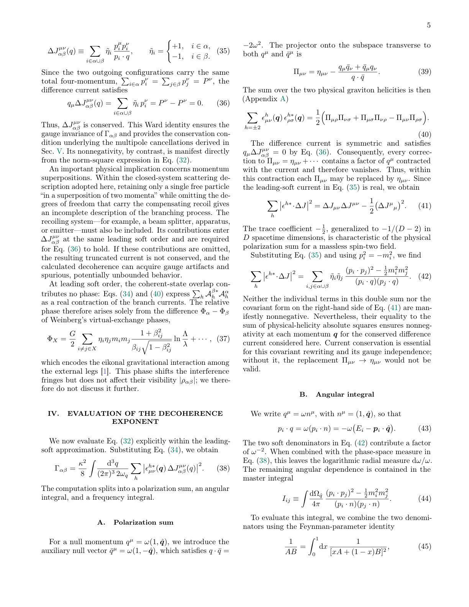
<figcaption class="paper-figure-caption"><b>Fig 4.</b> Low-resolution page preview, page 5</figcaption>
</figure>
<figure class="paper-figure-card">
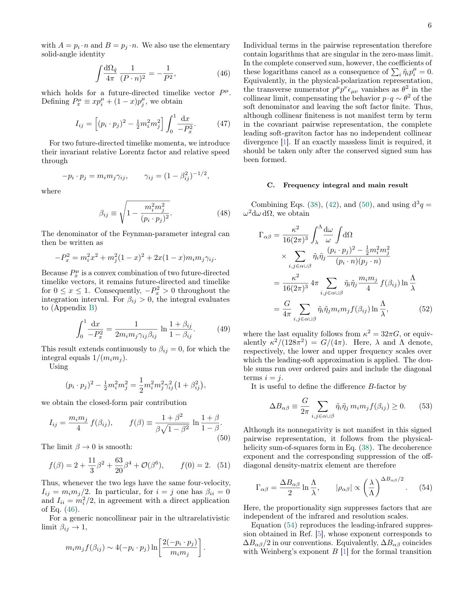
<figcaption class="paper-figure-caption"><b>Fig 5.</b> Low-resolution page preview, page 6</figcaption>
</figure>
</div>

<p><strong>Summary.</strong> This paper develops a theoretical framework to quantify gravitational decoherence arising from the emission of soft gravitons. By utilizing the soft-graviton S-matrix and analyzing the overlap of coherent radiation states, the authors derive a gauge-invariant decoherence exponent. The results are significant for understanding quantum interference in the presence of a gravitational background, particularly in cosmological settings.</p>
<p><strong>Why it may be interesting.</strong> The connection between soft-graviton scattering, infrared quantum information, and decoherence provides a novel theoretical framework for understanding how gravitational interactions can destroy quantum coherence in macroscopic systems.</p>
<details>
<summary>Detailed structure</summary>
<p><strong>Main problem.</strong> The paper investigates the decoherence of matter superpositions caused by the emission of soft gravitons, a process governed by the leading soft sector of the graviton S-matrix.</p>
<p><strong>Main result.</strong> The decoherence exponent is derived to be gauge-invariant and non-negative, showing that soft gravitons carry away which-path information, leading to an enhancement proportional to the gravitational-wave energy density and the fourth power of the observation time in certain regimes.</p>
<p><strong>Method.</strong> The analysis employs Weinberg's soft theorem, calculating the decoherence functional via the overlap of coherent radiation states and extending the formalism to include squeezed graviton states.</p>
<p><strong>Model / system.</strong> The system involves matter superpositions interacting with a gravitational field, modeled using the soft-graviton S-matrix formalism and analyzed in regimes ranging from the nonrelativistic limit to cosmological squeezed backgrounds.</p>
<p><strong>Key observables.</strong> The decoherence functional ($\Gamma_{\alphaeta}$), the decoherence exponent ($\Delta B_{\alphaeta}$), and the reduced density matrix elements ($
ho_{\alphaeta}$).</p>
<p><strong>Important parameters / regimes.</strong> Soft graviton frequency cutoff ($\lambda$), UV cutoff ($\Lambda$), gravitational-wave energy density ($\Omega_{	ext{gw}}$), and squeezing parameters ($r_q, \phi_q$).</p>
<p><strong>Assumptions / limitations.</strong> The analysis relies on the leading soft-graviton approximation and assumes specific conditions for the infrared cutoff identification (e.g., flat relic spectrum).</p>
<p><strong>Paper structure.</strong> The paper follows a structure moving from the general soft theorem derivation to the calculation of the decoherence functional, followed by specialized analyses for squeezed states and the nonrelativistic limit, concluding with physical implications.</p>
</details>
<details>
<summary>Abstract</summary>
<p>We revisit gravitational decoherence of matter superpositions using the leading soft sector of the graviton $S$-matrix. Starting from Weinberg's soft theorem and the overlap of coherent radiation states, we derive, for branch configurations with the same total four-momentum, a gauge-invariant, nonnegative leading-soft decoherence exponent and evaluate the polarization sum and angular integrals exactly at this order. In the vacuum, coherence between branches with distinguishable soft radiation vanishes as the infrared cutoff is removed. The leading nonrelativistic term is purely quadrupolar as a consequence of energy--momentum conservation. We extend the analysis to single- and two-mode squeezed graviton states, including the two-mode case motivated by inflation. Squeezing can enhance or suppress decoherence depending on the relative phase, while phase averaging gives an enhancement governed by the graviton occupation. For a phase-averaged relic background with an approximately flat energy-density spectrum over the relevant soft frequency band, the sharp-cutoff identification of the infrared scale with the inverse observation time gives a contribution that grows with the gravitational-wave energy density and with the fourth power of the observation time. These results connect soft-graviton scattering, infrared quantum information, and decoherence in nonvacuum gravitational backgrounds.</p>
</details>
<p><sub><a href="#top">↑ back to top</a></sub></p>

<p><a id="paper-2609.07923"></a></p>
<h3 id="hysteretic-coherence-collapse-across-the-first-order-cdw-transition-in-1t-tas2"><a href="http://arxiv.org/abs/2609.07923v1">Hysteretic Coherence Collapse Across the First Order CDW Transition in 1T-TaS2</a></h3>
<p><strong>Authors:</strong> Turgut Yilmaz, Anil Rajapitamahuni, Asish K. Kundu, Menka Jain, Elio Vescovo<br>
<strong>Type:</strong> experiment · <strong>Category:</strong> strongly correlated electrons · <strong>PDF:</strong> <a href="https://arxiv.org/pdf/2609.07923v1">https://arxiv.org/pdf/2609.07923v1</a><br>
<strong>Analysis basis:</strong> full PDF text, analyzed in chunks
<strong>Topic relevance:</strong> <code>Frenkel-Kontorova</code> <strong>1/5</strong> · <code>driven-dissipative phase transition</code> <strong>1/5</strong> · <code>non-equilibrium universality</code> <strong>1/5</strong></p>
<div class="figure-strip-hint">↔ Scroll figures horizontally</div>
<div class="paper-figures-scroll">
<figure class="paper-figure-card">
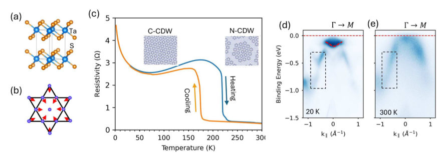
<figcaption class="paper-figure-caption"><b>Fig 1.</b> FIG. 1. (a) Crystal structure of 1T -TaS2 highlighting Ta (blue) and S (orange) atoms. (b) Schematic of the star-of-David cluster illustrating atomic displacements associated with the commensurate charge density wave (C-CDW). (c) Temperature- dependent resistivity measured upon cooling (orange) and heating (blue), showing hysteresis between the nearly commensurate (N-CDW) and commensurate (C-CDW) phases. Insets depict the corresponding atomic arrangements. (d, e) ARPES intensity maps along Γ–M at 20 K (C-CDW phase) and 300 K (NC-CDW phase), respectively. The dashed line marks the Fermi level, and the red curve highlights the flat band in the C-CDW phase.</figcaption>
</figure>
<figure class="paper-figure-card">
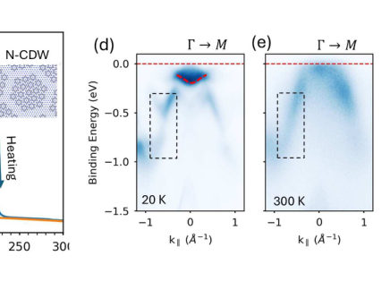
<figcaption class="paper-figure-caption"><b>Fig 2.</b> Fig. 1 summarizes the structural, transport, and elec- tronic properties of the layered 1T -TaS2 compound across its CDW phase transitions. The crystal structure, shown in Fig. 1a, consists of layered Ta atoms coordi- nated octahedrally by S atoms. The material forms two- dimensional sheets stacked along the out of plane direc- tion with weak van der Waals interlayer coupling. In the low-temperature C-CDW phase, the Ta atoms undergo a periodic lattice distortion forming a characteristic Star- of-David superstructure, illustrated in Fig. 1b. In this reconstruction, 13 Ta atoms contract toward a central Ta site, producing a √</figcaption>
</figure>
<figure class="paper-figure-card">
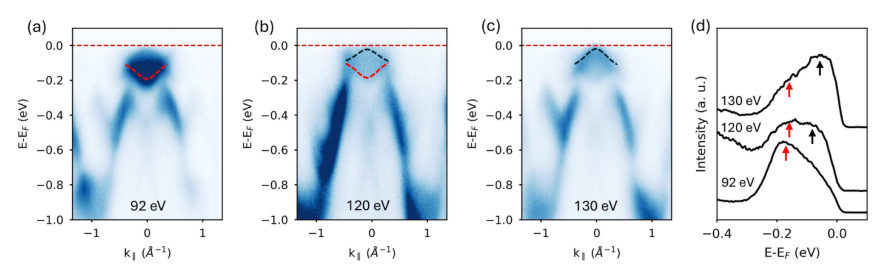
<figcaption class="paper-figure-caption"><b>Fig 3.</b> FIG. 2. (a) Electronic band dispersion measured at 92 eV photon energy, with the dashed contour highlighting a flat band mear −0.18 eV. (b) Band structure at 120 eV, where both red and black dashed contours emphasize the flat band and in-gap state, respectively. (c) Band structure at 130 eV, with the black dashed contour marking the in-gap state. (d) Corresponding energy distribution curves (EDCs) along the Γ. Red and black arrows trace the flat band and in-gap state, respectively. ARPES data in panels (a)–(c) were recorded along the Γ–M direction. Using the free-electron final-state model with an inner potential of V0 = 17.5 eV [14], the 92 eV and 120 eV measurements correspond approximately...</figcaption>
</figure>
<figure class="paper-figure-card">
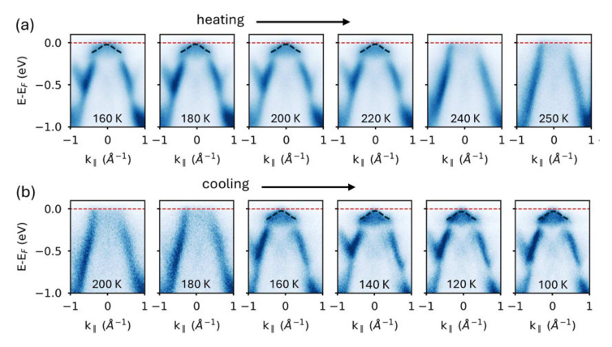
<figcaption class="paper-figure-caption"><b>Fig 4.</b> FIG. 3. (a) ARPES intensity maps recorded upon heating from 160 K to 250 K, showing the progressive changes in the near-EF states. (b) Corresponding cooling sequence from 200 K down to 100 K, highlighting the hysteretic behavior of the band dispersion. The comparison of heating and cooling cycles highlights the path-dependent evolution of the electronic states across the transition. The data is collected with 130 eV photon energies along the Γ–M high-symmetry direction. The dashed black curves highlight the in-gap state.</figcaption>
</figure>
<figure class="paper-figure-card">
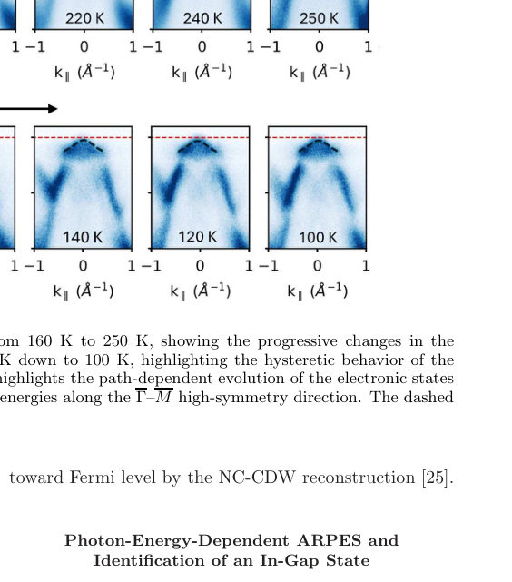
<figcaption class="paper-figure-caption"><b>Fig 5.</b> Fig. 2 presents photon energy dependent ARPES mea- surements highlighting the presence of an in-gap elec- tronic state. At 92 eV , the flat band is most promi- nently observed near the Brillouin zone center (Fig. 2a).</figcaption>
</figure>
</div>

<p><strong>Summary.</strong> This work uses ARPES to probe the electronic structure of 1T-TaS2 across its first-order CDW phase transition. By monitoring a distinct in-gap electronic state during controlled heating and cooling cycles, the authors provide direct spectroscopic evidence of the transition's first-order nature. The study strongly links the electronic reconstruction, evidenced by the state's hysteretic collapse, to the material's macroscopic transport properties.</p>
<p><strong>Why it may be interesting.</strong> The clear, hysteretic collapse and recovery of a specific electronic state provides a direct spectroscopic fingerprint of a first-order phase transition, which is a hallmark of strongly correlated electron physics.</p>
<details>
<summary>Detailed structure</summary>
<p><strong>Main problem.</strong> The study aims to understand the spectroscopic evolution of the low-energy electronic structure across the first-order Charge-Density Wave (CDW) transition in 1T-TaS2.</p>
<p><strong>Main result.</strong> The in-gap electronic state exhibits pronounced thermal hysteresis, collapsing upon heating into the NC-CDW phase and re-emerging upon cooling, directly mirroring the first-order resistivity transition.</p>
<p><strong>Method.</strong> Angle-Resolved Photoemission Spectroscopy (ARPES) was employed in temperature-dependent and photon-energy-dependent measurements across controlled heating and cooling cycles.</p>
<p><strong>Model / system.</strong> The physical system is the layered transition-metal dichalcogenide 1T-TaS2, which undergoes a first-order CDW transition between the C-CDW and NC-CDW phases.</p>
<p><strong>Key observables.</strong> The key observables are the spectral weight and intensity of the low-energy in-gap state and the flat band, tracked as a function of temperature and photon energy.</p>
<p><strong>Important parameters / regimes.</strong> The critical parameters include the transition temperatures (e.g., 180 K to 220 K) and the temperature cycling range used for ARPES measurements.</p>
<p><strong>Assumptions / limitations.</strong> The primary assumption is that the observed electronic features are directly linked to the structural and electronic reconstruction associated with the first-order CDW transition.</p>
<p><strong>Figures summary.</strong> Figures summarize the resistivity hysteresis, ARPES intensity maps showing the in-gap state's collapse/recovery upon thermal cycling, and detailed EDCs/MDCs confirming the hysteretic spectral features near the Fermi level.</p>
<p><strong>Paper structure.</strong> The paper uses ARPES to investigate the electronic structure across the CDW transition. It first characterizes the low-temperature C-CDW phase, then uses temperature-dependent measurements to track the in-gap state's evolution through heating and cooling cycles, correlating these spectroscopic changes with known transport anomalies.</p>
</details>
<details>
<summary>Abstract</summary>
<p>The first order phase transition between the nearly commensurate (NC-CDW) and commensurate (C-CDW) charge density wave phases in 1T-TaS2 underpins its exotic electronic behavior, yet the spectroscopic evolution of the low energy electronic structure across this transition remains crucial to understand. Using angle resolved photoemission spectroscopy (ARPES), we investigate the low temperature C-CDW phase, characterized by a flat band commonly associated with the lower Hubbard band and a distinct in-gap state located closer to the Fermi level. Photon energy dependent measurements distinguish these two low energy features through their different spectral weight evolution. Temperature dependent ARPES across heating and cooling cycles reveals that the in-gap state undergoes an abrupt collapse upon heating into the NC-CDW phase and re-emerges sharply upon cooling back into the C-CDW phase. This pronounced thermal hysteresis provides direct spectroscopic evidence of the first order nature of the transition. Furthermore, the disappearance and recovery of the in-gap state closely track the corresponding changes in resistivity, highlighting its intimate connection to the electronic reconstruction across the C-CDW/NC-CDW phase transition.</p>
</details>
<p><sub><a href="#top">↑ back to top</a></sub></p>

<p><a id="paper-2609.08601"></a></p>
<h3 id="polymorph-engineering-of-the-layered-rare-earth-magnet-gdalge"><a href="http://arxiv.org/abs/2609.08601v1">Polymorph Engineering of the Layered Rare-Earth Magnet GdAlGe</a></h3>
<p><strong>Authors:</strong> Dmitry V. Averyanov, Ivan S. Sokolov, Alexander N. Taldenkov, Oleg E. Parfenov, Alexey N. Mihalyuk, Ivan A. Yakovlev, Igor A. Karateev, Oleg A. Kondratev, Andrey M. Tokmachev, Vyacheslav G. Storchak<br>
<strong>Type:</strong> both · <strong>Category:</strong> strongly correlated electrons · <strong>PDF:</strong> <a href="https://arxiv.org/pdf/2609.08601v1">https://arxiv.org/pdf/2609.08601v1</a><br>
<strong>Analysis basis:</strong> full PDF text, analyzed in chunks
<strong>Topic relevance:</strong> <code>Keldysh / 2PI / non-Gaussian methods</code> <strong>1/5</strong> · <code>analog quantum simulation</code> <strong>1/5</strong> · <code>quantum measurements</code> <strong>1/5</strong></p>
<div class="figure-strip-hint">↔ Scroll figures horizontally</div>
<div class="paper-figures-scroll">
<figure class="paper-figure-card">
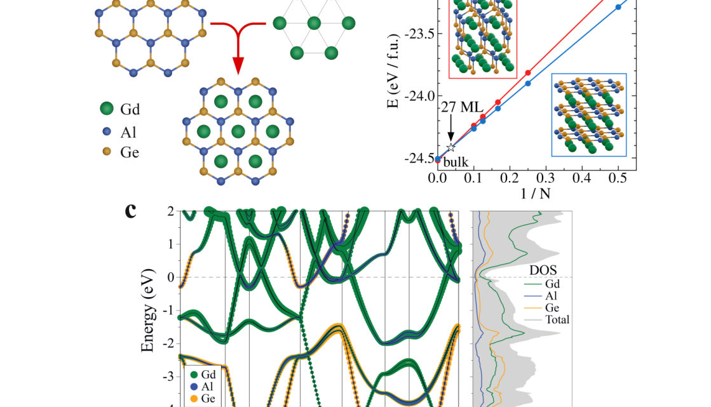
<figcaption class="paper-figure-caption"><b>Fig 1.</b> Figure 1. a) Composition of layered GdAlGe from the honeycomb lattice of AlGe and the</figcaption>
</figure>
<figure class="paper-figure-card">
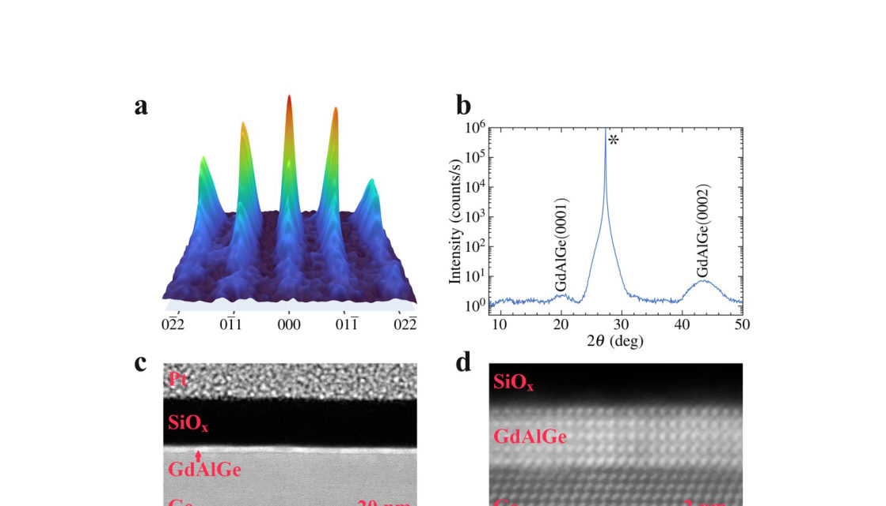
<figcaption class="paper-figure-caption"><b>Fig 2.</b> Figure 2. Atomic structure of 5 ML GdAlGe. a) 3D RHEED image with reflexes marked by</figcaption>
</figure>
<figure class="paper-figure-card">
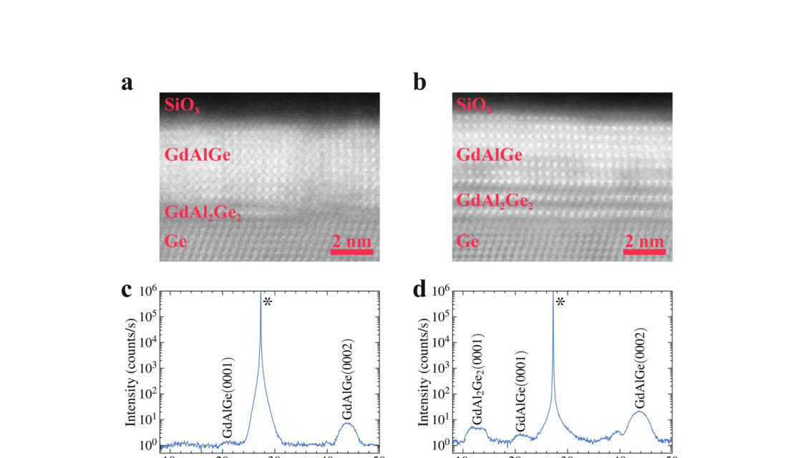
<figcaption class="paper-figure-caption"><b>Fig 3.</b> Figure 3. Side products limiting synthesis of thick GdAlGe films. a) and b) Cross-sectional</figcaption>
</figure>
<figure class="paper-figure-card">
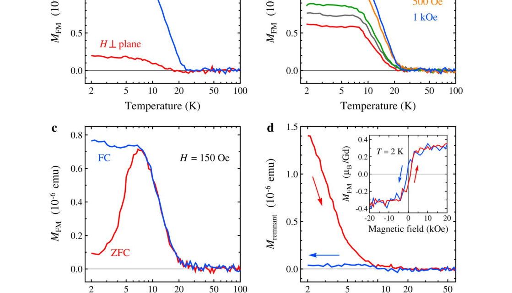
<figcaption class="paper-figure-caption"><b>Fig 4.</b> Figure 4. Magnetic properties of 5 ML GdAlGe. a) Temperature dependence of the FM</figcaption>
</figure>
<figure class="paper-figure-card">
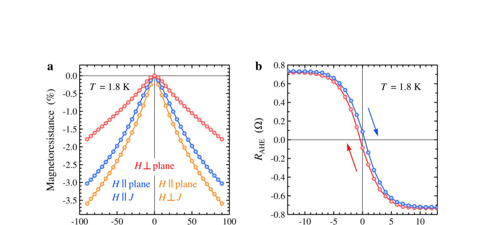
<figcaption class="paper-figure-caption"><b>Fig 5.</b> Figure 5. Electron transport properties of 5 ML GdAlGe. a) Magnetoresistance at 1.8 K in</figcaption>
</figure>
</div>

<p><strong>Summary.</strong> This work addresses the scarcity of layered magnetic materials by employing polymorph engineering to stabilize $   ext{GdAlGe}$ in ultrathin films. Using a combination of DFT calculations and advanced characterization techniques, the authors confirm the material's layered structure, ferromagnetic properties, and suitability for spintronics. The findings provide a blueprint for designing novel 2D magnetic materials.</p>
<p><strong>Why it may be interesting.</strong> While focused on magnetism, the study of phase stability, dimensionality effects, and electronic transport in crystalline solids touches upon concepts relevant to correlated electron systems and interface physics, which are key areas in condensed matter theory.</p>
<details>
<summary>Detailed structure</summary>
<p><strong>Main problem.</strong> The challenge of developing a sufficient number of layered rare-earth magnets suitable for spintronic applications.</p>
<p><strong>Main result.</strong> The authors successfully engineered and characterized an epitaxial film of the overlooked layered polymorph $  ext{GdAlGe}$, demonstrating its stability in ultrathin films and its ferromagnetic nature.</p>
<p><strong>Method.</strong> The study combines computational modeling (DFT) to predict phase stability with extensive experimental characterization using MBE growth, RHEED, XRD, STEM, SQUID magnetometry, and transport measurements.</p>
<p><strong>Model / system.</strong> The physical system is the layered rare-earth magnet $  ext{GdAlGe}$, which is grown epitaxially on a $ ext{Ge}(111)$ substrate. The research focuses on controlling the crystal structure via polymorph engineering to stabilize the desired layered phase.</p>
<p><strong>Key observables.</strong> Anisotropic ferromagnetic moment, Anomalous Hall Effect (AHE), negative magnetoresistance (MR), and structural confirmation via RHEED/STEM.</p>
<p><strong>Important parameters / regimes.</strong> The critical thickness limit of 5 monolayers (MLs) where the desired polymorph remains stable, and the growth temperature of $190^\circ	ext{C}$.</p>
<p><strong>Assumptions / limitations.</strong> The primary assumption is that surface energy dictates the polymorph stability, favoring the layered structure in the 2D limit over bulk phases.</p>
<p><strong>Figures summary.</strong> Figures detail the structural confirmation (RHEED, STEM) of the 5 ML film, the magnetic response (temperature dependence of FM moment in various fields), and the electronic transport properties (MR and AHE hysteresis).</p>
<p><strong>Paper structure.</strong> The paper follows a structure moving from theoretical prediction (polymorph stability via energy comparison) to experimental realization (MBE growth and structural confirmation) and finally to functional characterization (magnetism and transport).</p>
</details>
<details>
<summary>Abstract</summary>
<p>The recent advances in research on layered magnets have established them as invaluable materials for spintronic applications and precursors to 2D magnets. The problem is that the number of such materials available for experimentation is still low. To tackle the problem, one may employ phase engineering; in particular, the interplay between the phase stability and dimensionality provides great opportunities for design of layered magnets. Here, this interrelation is harnessed to produce epitaxial films of an overlooked layered polymorph of GdAlGe. The compound is formed by alternating triangular Gd and honeycomb AlGe lattices. It is stable in ultrathin films, up to 5 monolayers. In thicker films, an additional unwanted phase emerges. The structural quality of the ultrathin films is witnessed by electron and X-ray diffraction as well as electron microscopy. Magnetization measurements detect an anisotropic ferromagnetic state. The GdAlGe magnetism is corroborated by a study of electron transport revealing the anomalous Hall effect and negative magnetoresistance. The material is naturally integrated with Ge, a technological semiconductor, which should facilitate applications. The present study can serve as a blueprint for design of layered magnets via polymorph engineering.</p>
</details>
<p><sub><a href="#top">↑ back to top</a></sub></p>

<p><a id="paper-2609.08073"></a></p>
<h3 id="bottom-up-design-of-quantum-optical-experiments-using-discrete-generative-models"><a href="http://arxiv.org/abs/2609.08073v1">Bottom-Up Design of Quantum Optical Experiments Using Discrete Generative Models</a></h3>
<p><strong>Authors:</strong> Isaac L. Huidobro-Meezs, Simón Paiva-Ortega, Rodrigo A. Vargas-Hernández<br>
<strong>Type:</strong> theory · <strong>Category:</strong> quantum information and computing · <strong>PDF:</strong> <a href="https://arxiv.org/pdf/2609.08073v1">https://arxiv.org/pdf/2609.08073v1</a><br>
<strong>Analysis basis:</strong> full PDF text, analyzed in chunks
<strong>Topic relevance:</strong> <code>analog quantum simulation</code> <strong>1/5</strong> · <code>methods for driven-dissipative</code> <strong>1/5</strong></p>
<div class="figure-strip-hint">↔ Scroll figures horizontally</div>
<div class="paper-figures-scroll">
<figure class="paper-figure-card">
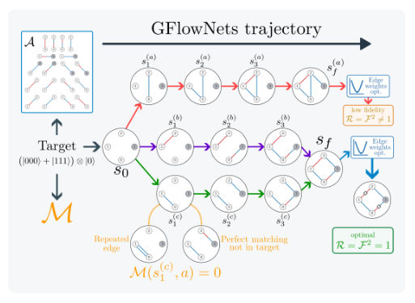
<figcaption class="paper-figure-caption"><b>Fig 1.</b> FIG. 1. Bottom-up construction of |GHZ(3, 2)⟩⊗|0⟩with Grinch. The node is the ancilla. The mask filters out invalid photonic states and avoids perfect matchings that are not present in the target state.</figcaption>
</figure>
<figure class="paper-figure-card">
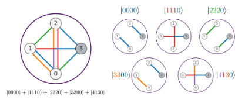
<figcaption class="paper-figure-caption"><b>Fig 2.</b> FIG. 2. Best found graph for the |SRV (5, 4, 4)⟩⊗|0⟩state with its decomposition into perfect matchings. The 3 corresponds to the ancilla photon detector.</figcaption>
</figure>
<figure class="paper-figure-card">
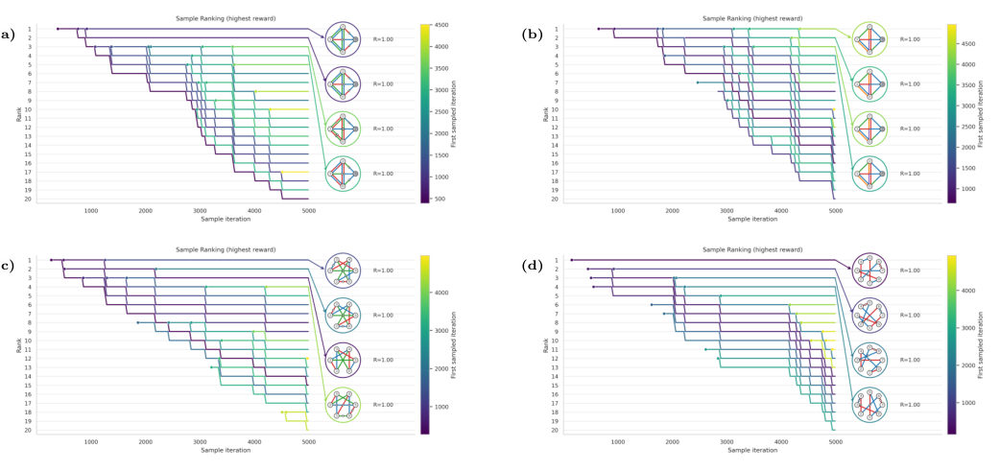
<figcaption class="paper-figure-caption"><b>Fig 3.</b> FIG. 3. Sample ranking over the number of iterations for (a) the |D(3, (1, 1, 1))⟩⊗|0⟩, (b) |SRV (5, 4, 4)⟩⊗|0⟩, (c) |GHZ(6, 3)⟩, and (d) |GHZ(8, 2)⟩states colored by the first sampled iteration. The algorithm reaches optimal solutions within the first quarter of the sampling process. The graphs of the best 4 solutions are shown as insets for each plot.</figcaption>
</figure>
<figure class="paper-figure-card">
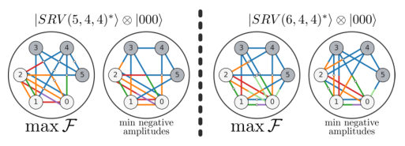
<figcaption class="paper-figure-caption"><b>Fig 4.</b> FIG. 4. Graphs found for the |SRV (5, 4, 4)∗⟩⊗|000⟩and |SRV (6, 4, 4)∗⟩⊗|000⟩SRV states. The greyed-out node cor- responds to the ancilla photon detector. Edges with negative amplitudes are signaled with a white diamond. Intruder states are reduced in magnitude through the weight optimization.</figcaption>
</figure>
<figure class="paper-figure-card">

<figcaption class="paper-figure-caption"><b>Fig 5.</b> FIG. 5. Principal component analysis of the sampled graphs for (a) the |GHZ(6, 3)⟩and (b) the |SRV (5, 4, 4)⟩⊗|0⟩states. |GHZ(6, 2)⟩sampling allowed up to 8 edges in the trajectory while for |SRV (5, 4, 4)⟩⊗|0⟩a max number of edges of 14 was used.</figcaption>
</figure>
</div>

<p><strong>Summary.</strong> This paper presents Grinch, a novel, bottom-up generative framework that uses Generative Flow Networks to design quantum optical circuits. Instead of optimizing existing dense graphs, Grinch learns to sample optimal circuit topologies directly based on the fidelity reward. This allows for the efficient discovery of multiple, high-fidelity circuit realizations for complex entangled states and quantum gates.</p>
<p><strong>Why it may be interesting.</strong> This work directly addresses the computational challenge of quantum circuit synthesis, providing a powerful, data-free generative AI tool for quantum optics that can explore alternative, hardware-constrained circuit topologies.</p>
<details>
<summary>Detailed structure</summary>
<p><strong>Main problem.</strong> The core problem is the inverse design of quantum optical experiments, which requires searching over vast spaces of discrete circuit topologies and continuous parameters to generate a target quantum state.</p>
<p><strong>Main result.</strong> The proposed framework successfully generates multiple high-fidelity optical graphs for complex entangled states and quantum gates, while also identifying asymptotic solutions for states that cannot be perfectly realized by simple graph structures.</p>
<p><strong>Method.</strong> The authors introduce Grinch, a bottom-up, reward-driven generative framework based on Generative Flow Networks (GFlowNets) that samples circuit graphs directly from a reward proportional to the state fidelity.</p>
<p><strong>Model / system.</strong> The physical system is quantum optical experiments modeled by weighted colored graphs $G(V, E)$. The state generated is a superposition of perfect matchings of this graph, and the process involves optimizing both discrete topology (edges) and continuous edge weights.</p>
<p><strong>Key observables.</strong> Fidelity ($F$) between the generated and target state is the primary reward function; edge count ($|E|$) measures circuit complexity.</p>
<p><strong>Important parameters / regimes.</strong> The search space involves optimizing continuous edge weights (e.g., using L-BFGS-B) and discrete graph structure.</p>
<p><strong>Assumptions / limitations.</strong> The approach assumes that the target state can be represented by an optical graph structure, though it also handles cases where this is not strictly true. It contrasts with top-down methods that prune dense graphs.</p>
<p><strong>Figures summary.</strong> Figures illustrate the bottom-up construction of specific entangled states (like $|GHZ(3, 2)
angle$) using Grinch, show the convergence of the generative model over sampling steps, and compare performance across different edge budget constraints.</p>
<p><strong>Paper structure.</strong> The paper introduces the problem of quantum inverse design, details the limitations of existing top-down methods, proposes the bottom-up Grinch framework using GFlowNets, demonstrates its application to various entangled states and gates, and concludes with comparisons to other solvers.</p>
</details>
<details>
<summary>Abstract</summary>
<p>Designing quantum optical experiments requires searching over discrete circuit topologies and continuous parameters, often with multiple realizations of the same target state. Graph-based methods commonly address this problem by optimizing a dense graph and pruning it toward a single circuit. We introduce \texttt{Grinch}, a bottom-up reward-driven generative framework that learns to sample optical graphs directly from fidelity-based rewards without relying on a pre-existing training dataset. We demonstrate the framework on multipartite entangled states, graph and cluster states, and nonlocal photonic-gate targets, obtaining multiple high-fidelity optical graphs. We identify asymptotic solutions for states that cannot be generated exactly by graphs, as well as nonlocal Toffoli gate constructions requiring two ancillas. Our work presents hardware-constraint objectives, which lead to alternative constructions of CNOT and Toffoli gates when connections between ancilla nodes are restricted. These findings illustrate a reward-driven approach to quantum optical inverse design, exploring alternative circuit topologies while directly incorporating connectivity constraints into the search process.</p>
</details>
<p><sub><a href="#top">↑ back to top</a></sub></p>

<p><a id="paper-2609.08699"></a></p>
<h3 id="effective-particle-size-governs-structure-and-dynamics-in-rough-hard-particle-fluids"><a href="http://arxiv.org/abs/2609.08699v1">Effective particle size governs structure and dynamics in rough hard-particle fluids</a></h3>
<p><strong>Authors:</strong> Nanqing Xiao, Zhen Zhang, Walter Kob, Yujie Wang<br>
<strong>Type:</strong> theory · <strong>Category:</strong> statistical mechanics · <strong>PDF:</strong> <a href="https://arxiv.org/pdf/2609.08699v1">https://arxiv.org/pdf/2609.08699v1</a><br>
<strong>Analysis basis:</strong> full PDF text, analyzed in chunks
<strong>Topic relevance:</strong> <code>analog quantum simulation</code> <strong>1/5</strong> · <code>non-equilibrium universality</code> <strong>1/5</strong></p>
<div class="figure-strip-hint">↔ Scroll figures horizontally</div>
<div class="paper-figures-scroll">
<figure class="paper-figure-card">

<figcaption class="paper-figure-caption"><b>Fig 1.</b> FIG. 1. (a) Schematic representation of a rough particle with a central core of radius Rc and surface asperities of radius Ra uniformly distributed along the perimeter. Surface coverage is defined as κ = NaRa/Rc, where Na is the number of asper- ities. (b) Examples of particles with different roughness Ra and coverage κ.</figcaption>
</figure>
<figure class="paper-figure-card">

<figcaption class="paper-figure-caption"><b>Fig 2.</b> FIG. 3. Bond-orientational order parameter ψ6 as a function of the effective packing fraction ϕeff for different values of the asperity radius Ra. Panels (a)–(c) correspond to κ = 1.0, 0.7, and 0.5, respectively, while panel (d) combines the data for all κ (κ = 1.0, 0.7, 0.63, and 0.5) to illustrate the resulting master-curve collapse. For each κ, the factor B used to make the master curve is indicated in the panel. Note that we show only data points for which the samples have not crystallized.</figcaption>
</figure>
<figure class="paper-figure-card">

<figcaption class="paper-figure-caption"><b>Fig 3.</b> FIG. 2. (a) Bond-orientational order parameter ψ6 as a func- tion of number density ρ for κ = 1.0 and different asperity radii Ra. The horizontal dashed line shows ψ6(ρc) = 0.4 and serves to define ρc presented in panel (b). (b) 1/√ρc as a function of Ra for different values of κ.</figcaption>
</figure>
<figure class="paper-figure-card">

<figcaption class="paper-figure-caption"><b>Fig 4.</b> FIG. 4. Scaling factor B as a function of the surface coverage ratio κ, extracted from four different structural quantities: The bond-orientational order parameter ψ6, the Lindemann ratio γ, the bond-angle distribution A, and the triplet ori- entational order parameter T6 (see SM for definitions). The red solid line shows the result of our analytical calculation (Eq. S119 in the SM), while the blue dashed line corresponds to its first-order approximation, Eq. (S120). Inset: Illustra- tion of the generic contact geometry between two MPs: The relative rotation of the right particle around the contact point (angles β and δ) yields all configurations needed to calculate the effective distance...</figcaption>
</figure>
<figure class="paper-figure-card">

<figcaption class="paper-figure-caption"><b>Fig 5.</b> FIG. 5. Diffusion constant D as a function of number density ρ for different asperity radii Ra at fixed κ: (a) κ = 1.0, (b) κ = 0.7, and (c) κ = 0.5. (d) The same data plotted versus the effective packing fraction ϕeff, showing a collapse onto a master curve.</figcaption>
</figure>
</div>

<p><strong>Summary.</strong> This work numerically and analytically investigates how surface roughness modifies the behavior of hard-particle fluids. The key finding is that the system's structural and dynamic properties can be universally described by mapping them onto an equivalent hard-disk system using an 'effective particle size.' This provides a powerful theoretical tool for simplifying complex, rough particle interactions.</p>
<p><strong>Why it may be interesting.</strong> While focused on classical fluids, the concept of mapping complex, rough interactions onto a simpler, effective model (hard disks) is analogous to coarse-graining or effective Hamiltonians used in quantum many-body physics.</p>
<details>
<summary>Detailed structure</summary>
<p><strong>Main problem.</strong> The study investigates how particle surface roughness affects the static and dynamic properties of hard-particle fluids.</p>
<p><strong>Main result.</strong> The structural and dynamic properties can be mapped onto equivalent hard-disk systems using an effective particle size, demonstrating a universal scaling behavior.</p>
<p><strong>Method.</strong> The authors use numerical simulations and analytical calculations to derive an effective particle size and map the system's behavior onto standard liquid-state theories.</p>
<p><strong>Model / system.</strong> The system models rough hard-particle fluids in 2D, where particles have surface asperities. Interactions are modeled using a Hertzian central force, and the system's behavior is analyzed by defining an effective particle radius ($R_{eff}$) and packing fraction ($\phi_{eff}$).</p>
<p><strong>Key observables.</strong> Bond-orientational order parameter ($\psi_6$), diffusion constant ($D$), Lindemann ratio ($\gamma$), and the mean contact distance ($ar{d}$).</p>
<p><strong>Important parameters / regimes.</strong> Number density ($
ho$), asperity radius ($R_a$), coverage ratio ($\kappa$), and the effective packing fraction ($\phi_{eff}$).</p>
<p><strong>Assumptions / limitations.</strong> The analysis assumes the system behaves as a hard-core system, allowing for a mapping to hard-disk systems, and relies on small-roughness approximations for analytical derivations.</p>
<p><strong>Figures summary.</strong> Figures demonstrate the collapse of structural ($\psi_6$) and dynamic ($D$) properties onto master curves when plotted against the effective packing fraction ($\phi_{eff}$), confirming the scaling law.</p>
<p><strong>Paper structure.</strong> The paper progresses by first establishing the physical model and defining the effective parameters, then using structural diagnostics ($\psi_6$) to show the master-curve collapse, and finally extending this mapping to dynamic properties like the diffusion constant ($D$).</p>
</details>
<details>
<summary>Abstract</summary>
<p>We numerically investigate how particle surface roughness affects the static and dynamic properties of a hard-particle fluid across a wide range of densities, rho. These simulations of a simple model of granular systems reveal that, although the amplitude and coverage of surface corrugation significantly influence the rho-dependence of system properties, the qualitative behavior of this dependence remains unchanged. These findings can be described quantitatively by introducing an effective particle size, which enables a direct mapping of the rough particle systems to equivalent hard-disk systems. Analytical calculations provide an explicit form of this mapping, and allow us to predict the static and dynamic properties of rough particles using standard liquid-state theories for hard disks.</p>
</details>
<p><sub><a href="#top">↑ back to top</a></sub></p>

<p><a id="paper-2609.09147"></a></p>
<h3 id="greens-functions-from-sample-based-krylov-quantum-diagonalization-an-impurity-solver-for-dynamical-mean-field-theory"><a href="http://arxiv.org/abs/2609.09147v1">Green's Functions from Sample-based Krylov Quantum Diagonalization: An Impurity Solver for Dynamical Mean-Field Theory</a></h3>
<p><strong>Authors:</strong> Jay Patel, Chakradhar Rangi, Ka-Ming Tam<br>
<strong>Type:</strong> theory · <strong>Category:</strong> strongly correlated electrons · <strong>PDF:</strong> <a href="https://arxiv.org/pdf/2609.09147v1">https://arxiv.org/pdf/2609.09147v1</a><br>
<strong>Analysis basis:</strong> full PDF text, analyzed in chunks
<strong>Topic relevance:</strong> <code>Keldysh / 2PI / non-Gaussian methods</code> <strong>1/5</strong> · <code>methods for driven-dissipative</code> <strong>1/5</strong></p>
<div class="figure-strip-hint">↔ Scroll figures horizontally</div>
<div class="paper-figures-scroll">
<figure class="paper-figure-card">

<figcaption class="paper-figure-caption"><b>Fig 1.</b> FIG. 1. SKQD results for the particle–hole-symmetric SIAM chain at L = 12, U = 2. (a),(b) Impurity spectral function A(ω) reconstructed in the HF and bare orbital bases at increasing subspace size, against the exact (ED) result. (c) Pointwise error |A −Aexact| for the two bases at matched ground pool size 128. (d) Error maxω |A −Aexact| versus the fraction d/D of the ground sector retained; the dotted line is the convergence threshold, 0.05. (e) Augmentation cost: configurations added to the branch pool per ground-pool configuration on applying the multi-mode impurity operator c0 = P</figcaption>
</figure>
<figure class="paper-figure-card">

<figcaption class="paper-figure-caption"><b>Fig 2.</b> FIG. 2. SKQD results for the particle–hole-symmetric SIAM chain at L = 12, U = 4. (a),(b) Impurity spectral function A(ω) reconstructed in the HF and bare orbital bases at increasing subspace size, against the exact (ED) result. (c) Pointwise error |A −Aexact| for the two bases at matched ground pool size 128. (d) Error maxω |A −Aexact| versus the fraction d/D of the ground sector retained; the dotted line is the convergence threshold, 0.05. (e) Augmentation cost: configurations added to the branch pool per ground-pool configuration on applying the multi-mode impurity operator c0 = P</figcaption>
</figure>
<figure class="paper-figure-card">

<figcaption class="paper-figure-caption"><b>Fig 3.</b> FIG. 3. SKQD results for the particle–hole-symmetric SIAM chain at L = 12, U = 6. (a),(b) Impurity spectral function A(ω) reconstructed in the HF and bare orbital bases at increasing subspace size, against the exact (ED) result. (c) Pointwise error |A −Aexact| for the two bases at matched ground pool size 128. (d) Error maxω |A −Aexact| versus the fraction d/D of the ground sector retained; the dotted line is the convergence threshold, 0.05. (e) Augmentation cost: configurations added to the branch pool per ground-pool configuration on applying the multi-mode impurity operator c0 = P</figcaption>
</figure>
<figure class="paper-figure-card">

<figcaption class="paper-figure-caption"><b>Fig 4.</b> FIG. 4. SKQD sampled pool size as a function of interaction strength and system size. Left panel plots the pool size as a function of U for three different system sizes, L = 8, 10, and 12. Right panel plots the ratios between the pool size and the Hilbert space dimension.</figcaption>
</figure>
<figure class="paper-figure-card">

<figcaption class="paper-figure-caption"><b>Fig 5.</b> FIG. 5. SKQD results for the particle–hole-symmetric SIAM chain at L = 10, U = 2. (a),(b) Impurity spectral function A(ω) reconstructed in the HF and bare orbital bases at increasing subspace size, against the exact (ED) result. (c) Pointwise error |A −Aexact| for the two bases at matched ground pool size 128. (d) Error maxω |A −Aexact| versus the fraction d/D of the ground sector retained; the dotted line is the convergence threshold, 0.05. (e) Augmentation cost: configurations added to the branch pool per ground-pool configuration on applying the multi-mode impurity operator c0 = P</figcaption>
</figure>
</div>

<p><strong>Summary.</strong> This work extends the Sample-based Krylov Quantum Diagonalization (SKQD) technique from ground-state calculations to compute single-particle Green's functions for correlated systems. By sampling multiple particle-number sectors and using a Lanczos continued fraction, the method accurately reproduces spectral features across phase transitions. This advancement promises to enhance the feasibility of using quantum hardware for complex DMFT impurity solvers.</p>
<p><strong>Why it may be interesting.</strong> The technique directly addresses the computational bottleneck in simulating correlated materials by adapting a quantum diagonalization method to calculate spectral functions, which are crucial for understanding electronic excitations.</p>
<details>
<summary>Detailed structure</summary>
<p><strong>Main problem.</strong> The paper addresses the challenge of calculating single-particle Green's functions for strongly correlated impurity models, which is significantly harder than calculating ground states.</p>
<p><strong>Main result.</strong> The proposed SKQD method successfully reconstructs the spectral function for the SIAM across the metal-insulator transition, suggesting it enables DMFT impurity solvers on near-term quantum hardware with larger bath sites.</p>
<p><strong>Method.</strong> It generalizes the sample-based Krylov quantum diagonalization (SKQD) method by sampling unitary Krylov subspaces in $N\pm 1$ particle-number sectors and reconstructing the Green's function via a Lanczos continued fraction.</p>
<p><strong>Model / system.</strong> The study applies the method to the particle-hole-symmetric single-impurity Anderson model (SIAM) in chain geometry, which serves as the impurity solver for Dynamical Mean-Field Theory (DMFT).</p>
<p><strong>Key observables.</strong> Single-particle Green's function and its spectral density $A(\omega)$, showing features like quasiparticle residue and Mott gap.</p>
<p><strong>Important parameters / regimes.</strong> Interaction strength ($U$), system size ($L$), and the ratio of retained subspace size to full Hilbert space dimension ($d/D$).</p>
<p><strong>Assumptions / limitations.</strong> The method relies on classically evaluating sector-connecting overlaps and assumes the quantum device is only needed for short-time evolution sampling.</p>
<p><strong>Figures summary.</strong> Figures systematically analyze the convergence and accuracy of the SKQD method by plotting the spectral function error versus the fraction of the ground sector retained, across varying interaction strengths ($U$) and system sizes ($L$).</p>
<p><strong>Paper structure.</strong> The paper first establishes the need to generalize SKQD from ground states to Green's functions by sampling $N\pm 1$ sectors. It details the Lanczos reconstruction and then presents systematic numerical results showing convergence across different physical regimes (e.g., metal-insulator transition).</p>
</details>
<details>
<summary>Abstract</summary>
<p>We generalize the sample-based Krylov quantum diagonalization (SKQD) method from ground-state calculations to the evaluation of single-particle Green's functions. By constructing and sampling unitary Krylov subspaces in the N +/- 1 particle-number sectors and evaluating all sector-connecting overlaps classically, the approach reconstructs the Green's function via a Lanczos continued fraction while retaining the shallow-circuit, ancilla-free character of SKQD. The quantum device is required only to prepare and sample short-time evolutions. Applied to the particle-hole-symmetric single-impurity Anderson model in chain geometry, with the discrete bath representation used in dynamical mean-field theory (DMFT), the method recovers the spectral function using a relatively small fraction of the full Hilbert space. Across a range of interaction strengths that spans the metal-insulator transition, the main spectral features are reproduced. These results suggest that SKQD-based Green's-function calculations may allow DMFT impurity solvers with a larger number of bath sites on near-term quantum hardware than is currently practical.</p>
</details>
<p><sub><a href="#top">↑ back to top</a></sub></p>

<p><a id="paper-2609.08348"></a></p>
<h3 id="instantaneous-frame-theory-of-strongly-driven-parametric-gates"><a href="http://arxiv.org/abs/2609.08348v1">Instantaneous-Frame Theory of Strongly Driven Parametric Gates</a></h3>
<p><strong>Authors:</strong> Kentaro Kubo, Shinichi Inoue, Jushin Tei, Yinghao Ho, Yasunobu Nakamura, Hayato Goto<br>
<strong>Type:</strong> theory · <strong>Category:</strong> quantum information and computing · <strong>PDF:</strong> <a href="https://arxiv.org/pdf/2609.08348v1">https://arxiv.org/pdf/2609.08348v1</a><br>
<strong>Analysis basis:</strong> full PDF text, analyzed in chunks
<strong>Topic relevance:</strong> <code>QC/QI experiment</code> <strong>1/5</strong> · <code>quantum measurements</code> <strong>1/5</strong></p>
<div class="figure-strip-hint">↔ Scroll figures horizontally</div>
<div class="paper-figures-scroll">
<figure class="paper-figure-card">

<figcaption class="paper-figure-caption"><b>Fig 1.</b> FIG. 1. Schematic of (a) a tunable-coupler-based parametric gate and (b) a parametric iSWAP interaction. Population trajectory during an iSWAP gate initialized in |10⟩, shown in (c) the idle eigenbasis and (d) the instantaneous eigenbasis. Panels (c) and (d) are obtained from exact simulations of an experimentally demonstrated 100-ns iSWAP gate with a fidelity exceeding 99.9% in a CSDTC architecture [22].</figcaption>
</figure>
<figure class="paper-figure-card">

<figcaption class="paper-figure-caption"><b>Fig 2.</b> FIG. 2. Exchange couplings Ωi (i=exact, id, inst) (a,b) and ZZ phases ϕZZ (c,d) of optimized parametric iSWAP gates versus drive amplitude. Left and right columns show the plots for the DTC and CSDTC systems, respec- tively. Orange, green, and blue curves denote exact re- sults, conventional (idle-frame and adiabatic) predictions, and instantaneous-frame predictions, respectively. Horizon- tal dotted lines in (a) and (b) indicate gate durations T = 50 and 100 ns for the DTC system and T = 100 and 200 ns for the CSDTC system, respectively.</figcaption>
</figure>
<figure class="paper-figure-card">

<figcaption class="paper-figure-caption"><b>Fig 3.</b> FIG. 3. Dependence of the averaged nonadiabatic ZZ cou- pling ¯ζnonad on the restricted subspace for (a) DTC and (b) CSDTC systems. Orange, red, green, and blue curves denote exact results and results obtained with S = A, A ∪B, and A ∪B ∪C, respectively.</figcaption>
</figure>
<figure class="paper-figure-card">

<figcaption class="paper-figure-caption"><b>Fig 4.</b> FIG. 4. (a) Exchange couplings Ωi (i=exact, id, inst) and (b) accumulated ZZ phases ϕZZ of optimized parametric iSWAP gates in the STC system, as functions of the drive amplitude. Horizontal dotted lines in (a) indicate gate du- rations T = 50 and 100 ns. (c) Dependence of the averaged nonadiabatic ZZ coupling ¯ζnonad on the choice of restricted subspace in the STC system.</figcaption>
</figure>
<figure class="paper-figure-card">

<figcaption class="paper-figure-caption"><b>Fig 5.</b> FIG. 5. Color maps of the averaged nonadiabatic ZZ cou- pling ¯ζnonad versus the drive frequency ωd and drive ampli- tude δΘ. The top [(a,b)], middle [(c,d)], and bottom [(e,f)] rows correspond to the DTC, CSDTC, and STC systems, re- spectively. Left and right columns show the exact numeri- cal results and instantaneous-frame predictions obtained by solving Eq. (6) with S = A ∪B ∪C (right columns), respec- tively. Gray regions indicate parameter points where the av- erage leakage from A exceeds 0.001 [42]. At these points, leakage renders the process matrix within the computational subspace nonunitary, preventing a reliable extraction of the ZZ phase [42]; these points are therefore...</figcaption>
</figure>
</div>

<p><strong>Summary.</strong> This work develops an instantaneous-frame theory to accurately model parametric two-qubit gates in superconducting qubits, overcoming limitations found in traditional idle-basis approaches. By using the instantaneous eigenbasis, the authors provide a compact description of couplings governed by the Berry connection. This theory achieves quantitative agreement with numerical simulations, enabling the design of high-fidelity gates in the strongly driven regime.</p>
<p><strong>Why it may be interesting.</strong> It provides a rigorous, physically intuitive framework for analyzing driven quantum dynamics in superconducting qubits, moving beyond simplified approximations to handle fast, non-adiabatic gate operations.</p>
<details>
<summary>Detailed structure</summary>
<p><strong>Main problem.</strong> Conventional theories for parametric two-qubit gates fail in the large-amplitude regime required for fast gate operations.</p>
<p><strong>Main result.</strong> The dynamics are more accurately described using an instantaneous eigenbasis, which provides a compact, quantitative theory matching exact simulations.</p>
<p><strong>Method.</strong> The authors derive equations of motion using the instantaneous eigenbasis, governed by the non-Abelian Berry connection, to describe coherent rotations.</p>
<p><strong>Model / system.</strong> The study focuses on superconducting quantum processors using tunable couplers (DTC, CSDTC, STC) to implement parametric two-qubit gates like iSWAP gates.</p>
<p><strong>Key observables.</strong> Gate fidelity, exchange coupling ($\Omega$), effective ZZ coupling ($\phi_{ZZ}$), and population trajectories in both idle and instantaneous eigenbases.</p>
<p><strong>Important parameters / regimes.</strong> Large-amplitude drive regimes, fast gate durations (&lt; 50 ns), and the flux bias $\Theta$.</p>
<p><strong>Assumptions / limitations.</strong> The instantaneous eigenbasis approach is used as a natural moving frame, and approximations are made in deriving the effective couplings.</p>
<p><strong>Figures summary.</strong> Figures compare population trajectories in the idle vs. instantaneous basis, and summarize total error, leakage error, and ZZ error vs. drive amplitude for different coupler architectures.</p>
<p><strong>Paper structure.</strong> The paper first establishes the failure of idle-basis models, then introduces the instantaneous-frame theory using the Berry connection, and finally applies this theory to calculate and optimize gate fidelity for specific superconducting architectures.</p>
</details>
<details>
<summary>Abstract</summary>
<p>Parametric two-qubit gates using tunable couplers are a promising approach to scalable superconducting quantum processors. However, conventional theories formulated in the idle eigenbasis break down in the large-amplitude regime required for fast gate operations. Here, we show that parametric gates are more naturally and accurately described as coherent rotations between instantaneous eigenstates rather than idle eigenstates. This approach may appear counterintuitive, since instantaneous eigenbases are usually associated with adiabatic dynamics. However, they also form a natural moving frame for driven dynamics, where the non-Abelian Berry connection governs transitions and provides a compact description of the exchange and effective $ZZ$ couplings. We show that this theory achieves quantitative agreement with exact numerical simulations across representative tunable-coupler architectures, including double-transmon, capacitively shunted double-transmon, and single-transmon couplers. The description remains accurate even in regimes where idle-frame descriptions fail, while substantially reducing the reliance on computationally demanding exact simulations. These results establish an instantaneous-frame theory of parametric gates beyond conventional idle-frame models and provide a new perspective on driven quantum dynamics.</p>
</details>
<p><sub><a href="#top">↑ back to top</a></sub></p>

<p><a id="paper-2609.09132"></a></p>
<h3 id="near-optimal-synthesis-of-non-gaussian-phase-gates-via-qubit-oscillator-rabi-control"><a href="http://arxiv.org/abs/2609.09132v1">Near-optimal synthesis of non-Gaussian phase gates via qubit-oscillator Rabi control</a></h3>
<p><strong>Authors:</strong> Zhen Yang, Shan Jin, Zi-Wen Liu, Xiaoting Wang<br>
<strong>Type:</strong> theory · <strong>Category:</strong> quantum information and computing · <strong>PDF:</strong> <a href="https://arxiv.org/pdf/2609.09132v1">https://arxiv.org/pdf/2609.09132v1</a><br>
<strong>Analysis basis:</strong> full PDF text, analyzed in chunks
<strong>Topic relevance:</strong> <code>Keldysh / 2PI / non-Gaussian methods</code> <strong>1/5</strong> · <code>quantum measurements</code> <strong>1/5</strong></p>
<div class="figure-strip-hint">↔ Scroll figures horizontally</div>
<div class="paper-figures-scroll">
<figure class="paper-figure-card">

<figcaption class="paper-figure-caption"><b>Fig 1.</b> FIG. 1. Finite-resource convergence for representative CV evolutions. The curves show the numerical implementation errors as functions of the total Rabi interaction time Ttot for the cubic phase gate ei ˆ X3, the rotation ei( ˆ X2+ ˆ P 2), and the double-well evolution ei( ˆ X4−ˆ X2).</figcaption>
</figure>
</div>

<p><strong>Summary.</strong> This paper presents a near-optimal, analytically derived method to synthesize non-Gaussian phase gates necessary for universal continuous-variable quantum computation. By utilizing Rabi control in qubit-oscillator systems, the authors achieve a polylogarithmic scaling in the required interaction time relative to the target error. This establishes a powerful, scalable primitive for implementing complex quantum algorithms, such as solving PDEs.</p>
<p><strong>Why it may be interesting.</strong> This work provides a concrete, analytically derivable, and resource-efficient method to implement complex, non-Gaussian gates essential for advanced CV quantum algorithms, bridging theoretical gate requirements with physical control schemes.</p>
<details>
<summary>Detailed structure</summary>
<p><strong>Main problem.</strong> The paper addresses the challenge of engineering non-Gaussian phase gates, which are crucial but difficult to implement for universal continuous-variable (CV) quantum computation.</p>
<p><strong>Main result.</strong> They developed a near-optimal synthesis scheme for polynomial phase gates using qubit-oscillator Rabi control, achieving a total interaction time scaling of $O(\log(1/\epsilon)^{c})$.</p>
<p><strong>Method.</strong> The synthesis relies on approximating the target non-Gaussian phase gate using sequences of analytically constructed Rabi pulses, leveraging techniques related to Generalized Quantum Signal Processing (GQSP).</p>
<p><strong>Model / system.</strong> The system is a hybrid qubit-oscillator platform where the qubit mediates effective nonlinear dynamics of the oscillator via Rabi coupling. The target gates are polynomial phase gates $e^{iT p(\hat{X})}$.</p>
<p><strong>Key observables.</strong> Total Rabi interaction time ($T_{	ext{tot}}$), fidelity ($F_{sol}$), and the required success probability ($p_{	ext{succ}}$).</p>
<p><strong>Important parameters / regimes.</strong> Target error ($\epsilon$), polynomial degree ($R$), and the number of modes ($D$).</p>
<p><strong>Assumptions / limitations.</strong> The approximation is performed on a finite Fock subspace, and the method is near-optimal, though a residual $\log(1/\epsilon)$ gap remains between upper and lower bounds.</p>
<p><strong>Figures summary.</strong> Figures show numerical convergence of errors for representative CV evolutions and illustrate the successful reproduction of the antisymmetric spatial profile for a 2D regularized biharmonic equation.</p>
<p><strong>Paper structure.</strong> The paper establishes the general scaling for synthesizing polynomial phase gates, proves the near-optimality by matching the upper and lower bounds on $T_{	ext{tot}}$, and then applies this framework to implement complex core unitaries required for solving linear partial differential equations.</p>
</details>
<details>
<summary>Abstract</summary>
<p>Non-Gaussian gates remain a key bottleneck for universal continuous-variable (CV) quantum computation because the nonlinearities they require are difficult to engineer. To address this challenge, we develop an efficient qubit-oscillator Rabi synthesis scheme for polynomial phase gates, with a total interaction time that scales polylogarithmically with the inverse target error \(\varepsilon\). Specifically, for a class of readily preparable initial states, we show that a degree-\(R\) phase gate can be approximated by an analytically constructed Rabi sequence with total time \(O(\log^{(R-1)/2+o(1)}(1/\varepsilon))\). This construction requires no numerical optimization and therefore extends naturally to arbitrarily large multimode systems. We further establish a total-time lower bound of \(Ω(\log^{(R-1)/2}(1/\varepsilon))\), showing that the synthesis is near optimal. As applications, we use this scheme to simulate representative CV quantum dynamics and implement a CV quantum algorithm for solving linear partial differential equations. These results establish qubit-oscillator Rabi control as an efficient, analytically compilable, and near-optimal primitive for CV quantum information processing.</p>
</details>
<p><sub><a href="#top">↑ back to top</a></sub></p>

<p><a id="paper-2609.08406"></a></p>
<h3 id="performance-of-the-subcarrier-wave-quantum-key-distribution-in-the-presence-of-spontaneous-raman-scattering-noise-generated-by-classical-dwdm-channels"><a href="http://arxiv.org/abs/2609.08406v1">Performance of the subcarrier-wave quantum key distribution in the presence of spontaneous Raman scattering noise generated by classical DWDM channels</a></h3>
<p><strong>Authors:</strong> Fedor Kiselev, Roman Goncharov, Natalia Veselkova, Eduard Samsonov, Alexei D. Kiselev, Vladimir Egorov<br>
<strong>Type:</strong> theory · <strong>Category:</strong> quantum information and computing · <strong>PDF:</strong> <a href="https://arxiv.org/pdf/2609.08406v1">https://arxiv.org/pdf/2609.08406v1</a><br>
<strong>Analysis basis:</strong> full PDF text, analyzed in chunks
<strong>Topic relevance:</strong> <code>correlated / nonlocal dissipation</code> <strong>1/5</strong> · <code>interference shaping light</code> <strong>1/5</strong></p>
<div class="figure-strip-hint">↔ Scroll figures horizontally</div>
<div class="paper-figures-scroll">
<figure class="paper-figure-card">

<figcaption class="paper-figure-caption"><b>Fig 1.</b> FIG. 1. Schematic of the subcarrier-wave quantum key distribution system. Insets (in circles)</figcaption>
</figure>
<figure class="paper-figure-card">

<figcaption class="paper-figure-caption"><b>Fig 2.</b> FIG. 2. QBER and contributions to the probability of detection Pdet (see Eq. (8)) versus optical</figcaption>
</figure>
<figure class="paper-figure-card">

<figcaption class="paper-figure-caption"><b>Fig 3.</b> FIG. 3. Secure key generation rate versus optical fiber length for continuous (a) and pulsed (b)</figcaption>
</figure>
<figure class="paper-figure-card">

<figcaption class="paper-figure-caption"><b>Fig 4.</b> FIG. 4. Secure key generation rate versus optical fiber length for continuous (a) and pulsed (b)</figcaption>
</figure>
<figure class="paper-figure-card">

<figcaption class="paper-figure-caption"><b>Fig 5.</b> Figure 5. The distance is shown to be a decreasing function of the sensitivity and the best</figcaption>
</figure>
</div>

<p><strong>Summary.</strong> This paper analyzes the performance limitations of Subcarrier-Wave Quantum Key Distribution (SCW QKD) when subjected to noise from classical DWDM traffic via spontaneous Raman scattering. By developing a detailed mathematical model, the authors compare continuous wave and pulsed operation modes. They conclusively show that operating in a pulsed regime significantly enhances both the secure key rate and the maximum transmission distance compared to the CW regime.</p>
<p><strong>Why it may be interesting.</strong> This work is highly relevant to quantum optics and open quantum systems as it models decoherence and noise (SpRS) from a realistic, high-power classical environment (DWDM) and proposes an operational regime (pulsed) to mitigate its detrimental effects on quantum communication.</p>
<details>
<summary>Detailed structure</summary>
<p><strong>Main problem.</strong> The paper investigates how spontaneous Raman scattering (SpRS) noise, generated by classical Dense Wavelength Division Multiplexing (DWDM) channels, degrades the performance of Subcarrier-Wave Quantum Key Distribution (SCW QKD) systems.</p>
<p><strong>Main result.</strong> The pulsed operational regime significantly outperforms the continuous wave (CW) regime, achieving both a higher secure key generation rate and a greater maximum achievable distance in the presence of this noise.</p>
<p><strong>Method.</strong> A mathematical model is developed to calculate the Quantum Bit Error Rate (QBER) and the secure key generation rate by incorporating the noise power from SpRS into the standard QKD analysis framework.</p>
<p><strong>Model / system.</strong> The system is an SCW QKD protocol operating over a single-mode optical fiber co-propagating with classical DWDM channels. The analysis compares performance in both continuous wave and pulsed laser regimes.</p>
<p><strong>Key observables.</strong> Quantum Bit Error Rate (QBER), secure key generation rate, and maximum achievable distance.</p>
<p><strong>Important parameters / regimes.</strong> Classical receiver sensitivity (ranging from -23 dBm to -48 dBm), DWDM parameters ($\xi = 0.18 	ext{ dB/km}$, $\Delta\lambda = 15 	ext{ GHz}$, $N_{ch} = 40$).</p>
<p><strong>Assumptions / limitations.</strong> The analysis assumes SpRS noise is evenly distributed in time for calculating the mean photon number, and it focuses on channels within the narrow spectral C-band.</p>
<p><strong>Figures summary.</strong> Figure 5 compares the maximum possible operating distance versus classical channel receiver sensitivity for both CW and Pulsed modes, demonstrating the superior performance of the pulsed regime.</p>
<p><strong>Paper structure.</strong> The paper first develops the mathematical framework to model SpRS noise impact, then analyzes the QBER and key rate for both CW and pulsed regimes, culminating in a comparison showing the pulsed regime's advantage across varying receiver sensitivities.</p>
</details>
<details>
<summary>Abstract</summary>
<p>In this paper we study performance of the subcarrier-wave quantum key distribution system (SCW QKD) in the presence of spontaneous Raman scattering (SpRS) noise generated by classical channels of dense wavelength division multiplexing (DWDM) network within a single-mode optical fiber. We present the mathematical model for evaluation of the quantum bit error rate (QBER) and the secure key generation rate with the SpRS noise taken into account. We consider two regimes of the SCW QKD system: the continuous wave regime that uses continuous wave laser and the pulsed regime. For these regimes, performance of the system is analyzed depending on receiver sensitivity of classical DWDM. It is found that the pulsed regime outperforms the continuous wave regime in both the secure key generation rate and the maximum achievable distance.</p>
</details>
<p><sub><a href="#top">↑ back to top</a></sub></p>

<p><a id="paper-2609.08548"></a></p>
<h3 id="schwinger-boson-perturbation-theory-for-spin-math606math-kitaev-heisenberg-magnets-phase-diagram-and-dynamical-response-near-kitaev-spin-liquids"><a href="http://arxiv.org/abs/2609.08548v1">Schwinger boson perturbation theory for spin-$S$ Kitaev-Heisenberg magnets: phase diagram and dynamical response near Kitaev spin liquids</a></h3>
<p><strong>Authors:</strong> Daiki Sasamoto, Joji Nasu<br>
<strong>Type:</strong> theory · <strong>Category:</strong> strongly correlated electrons · <strong>PDF:</strong> <a href="https://arxiv.org/pdf/2609.08548v1">https://arxiv.org/pdf/2609.08548v1</a><br>
<strong>Analysis basis:</strong> full PDF text, analyzed in chunks
<strong>Topic relevance:</strong> <code>Keldysh / 2PI / non-Gaussian methods</code> <strong>1/5</strong> · <code>analog quantum simulation</code> <strong>1/5</strong></p>
<div class="figure-strip-hint">↔ Scroll figures horizontally</div>
<div class="paper-figures-scroll">
<figure class="paper-figure-card">

<figcaption class="paper-figure-caption"><b>Fig 1.</b> FIG. 1. (a) Honeycomb lattice on which the spin-S Kitaev- Heisenberg Hamiltonian is defined. Blue, green, and red links de- note the x, y, and z Kitaev bonds, respectively. (b) First and extended Brillouin zones. The colored symbols mark the high-symmetry wave vectors, Γ, K, M, Γ′, and M′. (c) Real-space spin configurations of the FM, stripy AFM, zigzag AFM, and Néel AFM states. The sym- bols shown in each panel indicate the corresponding ordering wave vectors, using the same symbols as in (b). Larger and smaller sym- bols denote dominant and subdominant susceptibility channels, re- spectively.</figcaption>
</figure>
<figure class="paper-figure-card">

<figcaption class="paper-figure-caption"><b>Fig 2.</b> FIG. 2. (a) Four-boson interaction vertex Vq obtained from the perturbing Hamiltonian in Eq. (22). (b) Coefficient-free bare bubble X(0)(q, iωn) obtained from normal and anomalous Schwinger boson Green’s functions of the Kitaev SBMFT Hamiltonian. (c) Dyson equation for the RPA-dressed internal bubble XRPA(q, iωn). The physical susceptibility is obtained after attaching the external spin vertices.</figcaption>
</figure>
<figure class="paper-figure-card">

<figcaption class="paper-figure-caption"><b>Fig 3.</b> FIG. 4. Ground-state phase diagram of the spin-S Kitaev- Heisenberg model parametrized by J = cos ϕ and K = sin ϕ. The central disk represents the classical S = ∞limit, while the concentric annuli correspond to S = 2, 3/2, 1, and 1/2. The blue QSL bound- aries are obtained from the static RPA instabilities at δ = 0.01. The remaining finite-S ordered-state boundaries are supplied by a calcu- lation based on linear spin-wave theory, as described in Appendix B, and are drawn as dashed radial lines.</figcaption>
</figure>
<figure class="paper-figure-card">

<figcaption class="paper-figure-caption"><b>Fig 4.</b> FIG. 3. (a) Real-space mean-field pattern of the π/2-flux Ansatz in the eight-site unit cell. Blue, green, and red arrows denote the directed x, y, and z bonds, respectively. Each arrow fixes the ordered pair (i, j), from site i to site j, used for all bond operators and for ηγ ij. Solid directed bonds have ηγ ij = 1, whereas dashed directed bonds have ηγ ij = i. The offset black dotted arrows indicate the directed bond vectors δx, δy, and δz defined in Eq. (A6). The sublattices are labeled A–H in the order used in the mean-field Hamiltonian. (b) First and extended Brillouin zones with the high-symmetry symbols defined in Fig. 1(b). Purple arrows show the path K →Γ →M → K′ →Γ′ →M′ →K used...</figcaption>
</figure>
<figure class="paper-figure-card">

<figcaption class="paper-figure-caption"><b>Fig 5.</b> Figure 4 shows the ground-state phase diagram of the spin- S Kitaev-Heisenberg model obtained in this work. The phase diagram is parametrized by the angle ϕ in Eq. (2). The central disk represents the classical S = ∞limit, and the concen- tric annuli correspond to S = 2, 3/2, 1, and 1/2. The blue boundaries are the QSL boundaries determined from the in- stabilities of the static RPA susceptibility. QSL1 and QSL2 are centered at the antiferromagnetic and ferromagnetic Ki- taev points, ϕ/π = 1/2 and 3/2, respectively. The remaining regions are the FM, zigzag AFM, Néel AFM, and stripy AFM magnetically ordered phases, and the finite-S boundaries be- tween these magnetically ordered phases are...</figcaption>
</figure>
</div>

<p><strong>Summary.</strong> This work develops a Schwinger boson perturbative theory to study the phase diagram and spin dynamics of the spin-$S$ Kitaev-Heisenberg model. By using the pure Kitaev model as a starting point and applying RPA, the authors map out quantum spin liquid boundaries for various spins. The results show that the QSL phase is highly sensitive to the spin magnitude, providing crucial insights into frustrated magnetism in correlated materials.</p>
<p><strong>Why it may be interesting.</strong> The rigorous application of Schwinger boson theory to higher-spin systems ($S>1/2$) provides advanced tools for analyzing quantum magnetism, which is a core area of strongly correlated electron physics.</p>
<details>
<summary>Detailed structure</summary>
<p><strong>Main problem.</strong> The paper aims to develop a theoretical framework to map out the phase diagram and understand the dynamical spin response of spin-$S$ Kitaev-Heisenberg magnets near quantum spin liquid (QSL) states.</p>
<p><strong>Main result.</strong> The study determines phase boundaries separating QSL regimes from magnetically ordered phases for various spins ($S=1/2, 1, 3/2, 2$), showing that QSL regions shrink rapidly with increasing $S$.</p>
<p><strong>Method.</strong> The authors employ a Schwinger boson perturbative framework, utilizing the spin-liquid saddle point of the pure Kitaev model as the unperturbed state and applying the Random-Phase Approximation (RPA).</p>
<p><strong>Model / system.</strong> The system is the spin-$S$ Kitaev-Heisenberg model on the honeycomb lattice, described by a Hamiltonian involving Kitaev and Heisenberg couplings, parameterized by an angle $\phi$.</p>
<p><strong>Key observables.</strong> Phase boundaries, the dressed dynamical spin structure factor, and the static RPA susceptibility.</p>
<p><strong>Important parameters / regimes.</strong> Spin quantum number $S$ ($1/2, 1, 3/2, 2$), and the coupling ratio $j=J/K$.</p>
<p><strong>Assumptions / limitations.</strong> The framework relies on exploiting the Klein duality to decompose the Hamiltonian into an unperturbed (duality-invariant) term and a perturbation for the RPA treatment.</p>
<p><strong>Figures summary.</strong> Figure 1 illustrates the honeycomb lattice structure and various classical spin configurations (FM, AFM) defining ordering wave vectors. Figure 2 details the components used in the RPA response calculation.</p>
<p><strong>Paper structure.</strong> The paper first establishes the model and the Schwinger boson approach. It then uses Klein duality to set up the RPA calculation, determining phase boundaries for different $S$. Finally, it computes the spin dynamics, observing continuum features and spectral weight softening near magnetic instabilities.</p>
</details>
<details>
<summary>Abstract</summary>
<p>We develop a Schwinger boson perturbative framework for the spin-$S$ Kitaev-Heisenberg model. The spin-liquid saddle point of the pure Kitaev model is used as the unperturbed state, and magnetic instabilities and dynamical spin correlations are evaluated around this saddle point. We decompose the Hamiltonian exactly into two parts by exploiting the Klein duality intrinsic to the Kitaev-Heisenberg model. We perform the random-phase approximation by taking the part invariant under the duality transformation as the unperturbed term and treating the remaining term, which changes sign under it, as the perturbation. We determine the phase boundaries separating the quantum spin-liquid regimes from the adjacent magnetically ordered phases for $S=1/2$, $1$, $3/2$, and $2$. The spin-liquid regions shrink rapidly with increasing $S$ and become very narrow at $S=2$. We also compute the spin dynamics of the spin-$S$ Kitaev-Heisenberg model, focusing on $S=1$, and find that the dressed dynamical spin structure factor retains a broad two-spinon continuum at finite energies, while the low-energy spectral weight softens at the ordering wave vectors of the adjacent magnetic phases. Our framework thus enables thermodynamic-limit calculations of spin dynamics near magnetic instabilities.</p>
</details>
<p><sub><a href="#top">↑ back to top</a></sub></p>

<p><a id="paper-2609.08453"></a></p>
<h3 id="the-forgotten-history-of-wave-function-variance-optimization-and-its-relevance-for-neural-network-vmc"><a href="http://arxiv.org/abs/2609.08453v1">The Forgotten History of Wave Function Variance Optimization and its Relevance for Neural-Network VMC</a></h3>
<p><strong>Authors:</strong> Dario Bressanini<br>
<strong>Type:</strong> theory · <strong>Category:</strong> numerical methods · <strong>PDF:</strong> <a href="https://arxiv.org/pdf/2609.08453v1">https://arxiv.org/pdf/2609.08453v1</a><br>
<strong>Analysis basis:</strong> full PDF text, analyzed in chunks
<strong>Topic relevance:</strong> <code>methods for driven-dissipative</code> <strong>1/5</strong> · <code>quantum measurements</code> <strong>1/5</strong></p>
<div class="figure-strip-hint">↔ Scroll figures horizontally</div>
<div class="paper-figures-scroll">
<figure class="paper-figure-card">

<figcaption class="paper-figure-caption"><b>Fig 1.</b> FIG. 2. Absolute energy errors for H+ 2 using the Guillemin– Zener ansatz minimized with Energy, Variance, MAD, LC and L−4 cost functions. The exact potential energy curve is super- imposed as a dashed gray line in the background (unmarked secondary axis) to guide the eye.</figcaption>
</figure>
<figure class="paper-figure-card">

<figcaption class="paper-figure-caption"><b>Fig 2.</b> FIG. 1. Absolute energy errors for H+ 2 as a function of inter- nuclear distance R, comparing Energy, Variance, and MAD optimization using a simple MO ansatz. The exact poten- tial energy curve is superimposed as a dashed gray line in the background (unmarked secondary axis) to highlight the repulsive, equilibrium, and dissociation regions.</figcaption>
</figure>
</div>

<p><strong>Summary.</strong> This paper reviews the history of optimizing wave functions using local energy variance in VMC. It argues that standard variance minimization fails for modern neural network wave functions due to heavy-tailed local energy distributions. The authors benchmark robust alternatives, such as MAD and $L_{-4}$, showing they outperform variance minimization in different physical regimes of the $  ext{H}_2^+$ molecule.</p>
<p><strong>Why it may be interesting.</strong> This is highly relevant as it directly addresses the numerical stability and theoretical foundation of modern Neural Quantum States (NQS) methods, providing concrete alternatives to standard energy minimization when dealing with complex, non-Gaussian local energy distributions.</p>
<details>
<summary>Detailed structure</summary>
<p><strong>Main problem.</strong> The paper addresses the fundamental challenge of selecting the optimal functional for optimizing trial wave functions in Variational Monte Carlo (VMC) and Neural-Network VMC (NN-VMC). This is necessary because standard variance minimization assumptions fail for modern wave functions.</p>
<p><strong>Main result.</strong> The authors demonstrate that while energy minimization is standard, alternative robust cost functions like Mean Absolute Deviation (MAD) or specialized L-infinity functionals outperform variance minimization for specific regimes of the $  ext{H}_2$ potential energy curve.</p>
<p><strong>Method.</strong> The work involves re-tracing the historical development of variance optimization principles and benchmarking several robust cost functions (MAD, Cauchy loss, $L_{-4}$) against the standard energy expectation value on a benchmark system.</p>
<p><strong>Model / system.</strong> The primary model is the electronic structure calculation for molecular systems, benchmarked specifically on the $  ext{H}_2^+$ molecular ion across its full potential energy curve. The methodology is applicable to general quantum systems solved via VMC/NN-VMC.</p>
<p><strong>Key observables.</strong> Variational energy ($E$), local energy variance ($\sigma^2$), Mean Absolute Deviation (MAD), and the values of alternative functionals like $L_{-4}$.</p>
<p><strong>Important parameters / regimes.</strong> The internuclear distance ($R$) of the $    ext{H}_2^+$ system, which dictates the local energy distribution tails.</p>
<p><strong>Assumptions / limitations.</strong> The standard variance minimization implicitly assumes a Gaussian local energy distribution, which is incorrect for Coulombic systems exhibiting $E^{-4}$ power-law tails.</p>
<p><strong>Figures summary.</strong> The notes do not provide a summary of figures, but the benchmark compares the performance of different functionals (variance vs. MAD vs. $L_{-4}$) across the potential energy curve.</p>
<p><strong>Paper structure.</strong> The paper is structured as a historical review, tracing the development of variance optimization from the 1930s, followed by a modern analysis showing the failure of the variance estimator due to heavy tails, and concluding with a quantitative benchmark comparing robust functionals.</p>
</details>
<details>
<summary>Abstract</summary>
<p>We revisit the almost century-old question of which functional of the local energy best optimizes a trial wave function, a problem of central importance in Variational Monte Carlo (VMC) and, more recently, in Neural-Network VMC (NN-VMC). While variance optimization dates back to the 1930s, the high statistical noise and heavy-tailed local energy distributions inherent to modern neural-network wave functions have renewed interest in this approach. We retrace its long and largely forgotten history here, showing its direct relevance to modern Neural Quantum States (NQS) frameworks. Minimizing the variance (an $L^2$ norm) implicitly assumes a Gaussian local energy distribution: an unjustified assumption. For Coulombic systems, the local energy distribution exhibits $E^{-4}$ power-law tails, causing the Central Limit Theorem to fail for the variance estimator. This instability can be mitigated by robust cost functions: the Mean Absolute Deviation (MAD, an $L^1$ norm), the Cauchy loss, or the $L_{-4}$ functional, which features a tail analytically designed to match the $E^{-4}$ exponent. We benchmark these functionals on $H_2^+$, an exactly solvable system at every internuclear distance, using the Guillemin-Zener wave function across the full potential energy curve. While energy minimization by construction yields the lowest energy, variance minimization is surpassed at every $R$ by alternative functionals: MAD proves superior in the bonding region, while $L_{-4}$ performs best in the dissociation regime.</p>
</details>
<p><sub><a href="#top">↑ back to top</a></sub></p>

<p><a id="paper-2609.09118"></a></p>
<h3 id="topological-impurity-bands"><a href="http://arxiv.org/abs/2609.09118v1">Topological Impurity Bands</a></h3>
<p><strong>Authors:</strong> Arnab Seth, Itamar Kimchi<br>
<strong>Type:</strong> theory · <strong>Category:</strong> disordered systems and neural networks · <strong>PDF:</strong> <a href="https://arxiv.org/pdf/2609.09118v1">https://arxiv.org/pdf/2609.09118v1</a><br>
<strong>Analysis basis:</strong> full PDF text, analyzed in chunks
<strong>Topic relevance:</strong> <code>Keldysh / 2PI / non-Gaussian methods</code> <strong>1/5</strong> · <code>analog quantum simulation</code> <strong>1/5</strong></p>
<div class="figure-strip-hint">↔ Scroll figures horizontally</div>
<div class="paper-figures-scroll">
<figure class="paper-figure-card">

<figcaption class="paper-figure-caption"><b>Fig 1.</b> FIG. 1. Impurities in Chern insulators or trivial insulators and formation of topological impurity bands (TIBs). (a) Qi-Wu-Zhang (QWZ) model with onsite defect, Eq. 11. (b) Haldane model with hexagon defect, Eq. 15, capturing spin- orbit coupling to a magnetic moment. (c) Each VR defect produces a pair of in-gap impurity bound states |ψR ℓ⟩with differing vorticity ℓ= 1, 2. When the states hybridize at finite impurity density they generate an effective low energy theory tℓℓ′ RR′ with QWZ-like direction-dependent off-diagonal complex hopping e±iθ, producing TIB topological phase transitions.</figcaption>
</figure>
<figure class="paper-figure-card">

<figcaption class="paper-figure-caption"><b>Fig 2.</b> FIG. 2. Numerical evidence for TIB and TAI phase transitions for various H0 Hamiltonians. 3% impurities per site were randomly placed in a 1024-site system in 25 disorder configurations, with the impurity-free model H0 being QWZ (top row) or Haldane (bottom row). In each panel horizontal axis is defect strength h (where h = 0 is the clean model H0) and vertical axis is an H0 parameter (A for QWZ, t2 for Haldane). The disorder averaged Bott index (color scale) shows clear topological phase transitions in both the trivial (a,f) and topological (b,g) phases of the clean model H0, with H0 gap ∆= 0.1 near its Dirac cone phase transition (u = −2 or m = 3 √</figcaption>
</figure>
</div>

<p><strong>Summary.</strong> This work explores how localized defects can fundamentally alter the topology of electronic systems, leading to the formation of Topological Impurity Bands (TIBs). By analyzing impurity-induced bound states, the authors derive an effective low-energy theory applicable to lattice models like the Haldane model. This provides a local, defect-mediated route to realizing topological quantum phases.</p>
<p><strong>Why it may be interesting.</strong> The concept of disorder-induced topology, particularly through localized defects, provides a concrete mechanism for realizing topological phases that might be inaccessible via uniform disorder averaging, which is relevant for understanding engineered quantum materials.</p>
<details>
<summary>Detailed structure</summary>
<p><strong>Main problem.</strong> The paper investigates how localized defects, unlike long-wavelength disorder, can induce novel topological phase transitions in quantum materials.</p>
<p><strong>Main result.</strong> A finite density of defects can generate Topological Impurity Bands (TIBs), leading to new topological phase transitions even when the clean system is trivial.</p>
<p><strong>Method.</strong> The theory employs T-matrix calculations to find impurity bound states and derives an effective low-energy Hamiltonian by considering the hybridization of these states.</p>
<p><strong>Model / system.</strong> The study applies to lattice models like the Qi-Wu-Zhang and Haldane models, analyzing the effect of a local mass defect impurity potential on the electronic structure.</p>
<p><strong>Key observables.</strong> Topological Impurity Bands (TIBs), Bott index, Inverse Participation Ratio (IPR), and the vorticity ($\ell$) of impurity bound states.</p>
<p><strong>Important parameters / regimes.</strong> Defect density (e.g., 3%), critical impurity strength ($h_c$), and the nature of the disorder potential.</p>
<p><strong>Assumptions / limitations.</strong> The standard TAI theory's reliance on perturbative averaging is insufficient for localized defects; the analysis assumes the impurity term breaks certain symmetries while preserving others.</p>
<p><strong>Figures summary.</strong> Figure 1 illustrates TIB formation via impurity bound states with differing vorticity; Figure 2 shows numerical evidence of TIB transitions matching analytical predictions.</p>
<p><strong>Paper structure.</strong> The paper moves from establishing the limitations of standard disorder theory to deriving the TIB mechanism using bound states, and finally applying this theory to specific lattice models (QWZ, Haldane) to predict observable topological transitions.</p>
</details>
<details>
<summary>Abstract</summary>
<p>The effects of disorder on topological phases of matter are typically either preservation of topology or its destruction. For example, the quantum Hall effect's quantization and chiral edge mode remain robust until a strong-disorder percolation transition exits the topological phase. Disorder can also enlarge a preexisting topological phase, yielding a topological Anderson insulator (TAI). However, the reliance of TAI and other theoretical treatments on perturbatively averaging out long-wavelength randomness suggests that additional effects might appear when the disorder involves localized defects. Here we show that a finite density of randomly distributed defects can generate various new topological phase transitions. This route to disorder-induced topology can be viewed as the formation of topological impurity bands (TIB) and is applicable even if the initial clean model is a trivial band insulator. The theory relies on an orbital-dependent vorticity of impurity bound states, which we derive analytically near a generic Dirac cone phase transition as well as using the Chern insulator lattice models of Qi-Wu-Zhang and Haldane. Their numerically computed phase diagrams at 3% defect density show robust topological transitions in distinct TIB and TAI regimes, suggesting a local route to topological phases.</p>
</details>
<p><sub><a href="#top">↑ back to top</a></sub></p>

<p><a id="paper-2609.08389"></a></p>
<h3 id="a-theoretical-study-of-subcarrier-wave-quantum-key-distribution-system-integration-with-an-optical-transport-network-utilizing-dense-wavelength-division-multiplexing"><a href="http://arxiv.org/abs/2609.08389v1">A theoretical study of subcarrier-wave quantum key distribution system integration with an optical transport network utilizing dense wavelength division multiplexing</a></h3>
<p><strong>Authors:</strong> Fedor Kiselev, Natalia Veselkova, Roman Goncharov, Vladimir Egorov<br>
<strong>Type:</strong> theory · <strong>Category:</strong> quantum information and computing · <strong>PDF:</strong> <a href="https://arxiv.org/pdf/2609.08389v1">https://arxiv.org/pdf/2609.08389v1</a><br>
<strong>Analysis basis:</strong> full PDF text, analyzed in chunks
<strong>Topic relevance:</strong> <code>interference shaping light</code> <strong>1/5</strong></p>
<div class="figure-strip-hint">↔ Scroll figures horizontally</div>
<div class="paper-figures-scroll">
<figure class="paper-figure-card">

<figcaption class="paper-figure-caption"><b>Fig 1.</b> FIG. 1. Simulation results for eight channel DWDM grid with 100 GHz spacing (a) mean photon</figcaption>
</figure>
<figure class="paper-figure-card">

<figcaption class="paper-figure-caption"><b>Fig 2.</b> FIG. 2. (a) Dependence of SpRS and FWM noise on channel spacing for 20 DWDM channels; (b)</figcaption>
</figure>
<figure class="paper-figure-card">

<figcaption class="paper-figure-caption"><b>Fig 3.</b> FIG. 3. Simulation results for eight channel DWDM grid with 50 GHz spacing (a) photon detection</figcaption>
</figure>
<figure class="paper-figure-card">

<figcaption class="paper-figure-caption"><b>Fig 4.</b> FIG. 4. Secure key generation rate versus optical fiber length for O-band and C-band QKD-DWDM</figcaption>
</figure>
<figure class="paper-figure-card">

<figcaption class="paper-figure-caption"><b>Fig 5.</b> FIG. 5. Maximum achievable distance at which the SCW QKD system can operate versus extinction</figcaption>
</figure>
</div>

<p><strong>Summary.</strong> This paper theoretically analyzes how noise from classical DWDM channels degrades Subcarrier-Wave Quantum Key Distribution (SCW QKD) systems. By calculating QBER and key rates, the authors demonstrate that placing the quantum channel at 1310 nm (O-band) significantly outperforms the C-band, primarily due to reduced nonlinear noise, which is crucial for practical network deployment.</p>
<p><strong>Why it may be interesting.</strong> This work is highly relevant to quantum optics and quantum networks, as it provides quantitative guidelines for integrating quantum communication protocols into existing, high-capacity classical infrastructure.</p>
<details>
<summary>Detailed structure</summary>
<p><strong>Main problem.</strong> The paper investigates the performance limitations of Subcarrier-Wave Quantum Key Distribution (SCW QKD) when integrated into a classical optical transport network utilizing Dense Wavelength Division Multiplexing (DWDM).</p>
<p><strong>Main result.</strong> Quantum channel allocation at the 1310 nm wavelength (O-band) is superior to the C-band because it mitigates nonlinear noise effects, leading to better achievable distances despite higher fiber attenuation.</p>
<p><strong>Method.</strong> The study involves theoretical calculations of the Quantum Bit Error Rate (QBER) and the secure key generation rate by modeling various noise sources.</p>
<p><strong>Model / system.</strong> The system models SCW QKD operating over an optical fiber shared with multiple classical DWDM channels. Noise sources analyzed include Spontaneous Raman Scattering (SpRS), Four-Wave Mixing (FWM), and Linear Channel Crosstalk (LCXT).</p>
<p><strong>Key observables.</strong> Quantum Bit Error Rate (QBER), secure key generation rate, and various noise power levels ($P_{ram}, P_{ijk}$).</p>
<p><strong>Important parameters / regimes.</strong> Fiber length (L), attenuation ($\xi$), number of classical channels ($N_{ch}$), and the quantum channel allocation wavelength (1310 nm vs. C-band).</p>
<p><strong>Assumptions / limitations.</strong> The analysis assumes the use of output power for noise calculations and models the impact of noise sources on the overall detector click probability.</p>
<p><strong>Figures summary.</strong> Figures illustrate the dependence of noise sources (SpRS, FWM) and the secure key generation rate on fiber length and the number of classical channels for both O-band and C-band configurations.</p>
<p><strong>Paper structure.</strong> The paper systematically analyzes the impact of classical DWDM noise on SCW QKD, deriving expressions for noise powers, calculating QBER and key rates, and comparing performance metrics across different wavelength allocations (O-band vs. C-band).</p>
</details>
<details>
<summary>Abstract</summary>
<p>In this paper we study the performance of subcarrier-wave quantum key distribution (SCW QKD) in the presence of classical channels of optical transport network utilizing dense wavelength division multiplexing (DWDM). We consider the impact of spontaneous Raman scattering noise as well as the four-wave mixing and channel isolation efficiency. We calculate quantum bit error rate as well as the secure key generation rate of SCW-QKD protocol for different parameters of DWDM system and quantum channel allocations. Our calculations show, that quantum channel allocation at the wavelength of 1310 nm is preferable to allocation at C-band due to lower nonlinear noise, despite fiber's larger attenuation at this wavelength.</p>
</details>
<p><sub><a href="#top">↑ back to top</a></sub></p>
<hr>
<p>
<a href="index.html">← Index</a>
 · <a href="papers_03.html">← Previous</a> · <a href="papers_05.html">Next →</a>
</p>
<hr>

</body>
</html>
